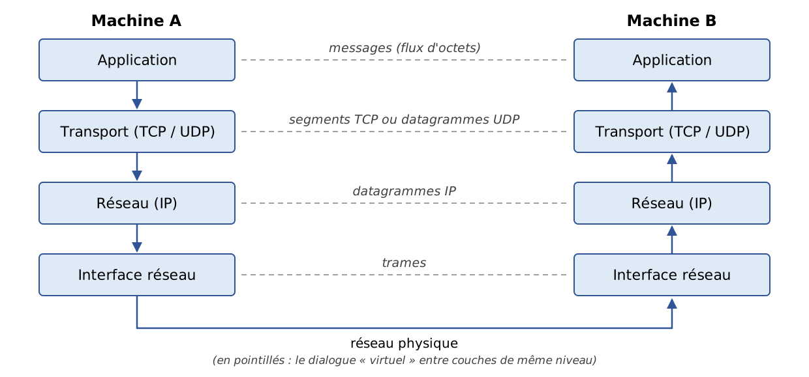
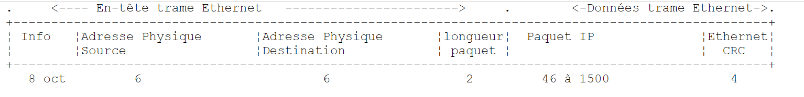
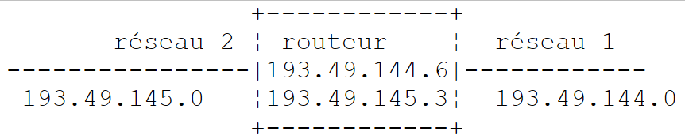
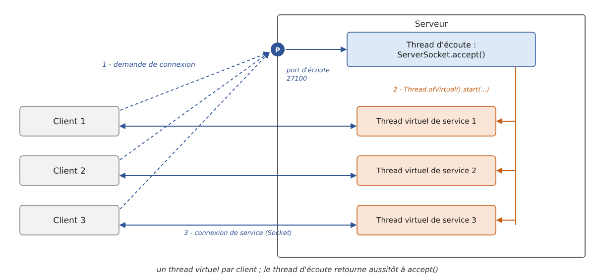
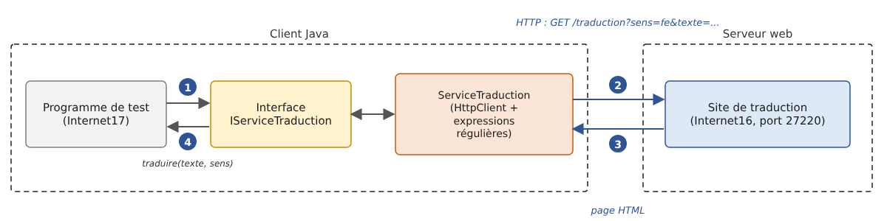

12. Web Programming
12.1. General Information
12.1.1. Internet Protocols
Here we provide an introduction to Internet communication protocols, also known as the TCP/IP protocol suite (Transmission Control Protocol / Internet Protocol), named after the two main protocols. It is helpful for the reader to have a general understanding of how networks work—and in particular of the TCP/IP protocols—before tackling the development of distributed applications. This presentation is based on a text from Novell’s “Lan Workplace for DOS” administration guide (early 1990s), retaining its structure and spirit while being updated: the Internet of 2026 is no longer quite the same as that of 1990.
The general concept of creating a network of heterogeneous computers stems from research conducted by the DARPA (Defense Advanced Research Projects Agency) in the United States. The DARPA developed the suite of protocols known as TCP/IP, which enables heterogeneous machines to communicate with one another. These protocols were tested on a network called ARPAnet, a network that later became the Internet (ARPAnet adopted TCP/IP on January 1, 1983). The TCP/IP protocols define formats and rules for transmission and reception that are independent of the network architecture and the hardware used.
The network designed by DARPA and managed by the TCP/IP protocols is a packet-switched network. Such a network transmits information in small pieces called packets. Thus, if a computer transmits a large file, it will be broken down into small pieces that are sent over the network to be reassembled at the destination. TCP/IP defines the format of these packets, including, in particular:
- the packet’s source;
- its destination;
- its length;
- its type.
Internet protocols are described in public documents called RFC (Request for Comments), published by the IETF (Internet Engineering Task Force) and available on www.rfc-editor.org. We will cite some of these documents throughout this chapter.
12.1.2. The OSI Model
The TCP/IP protocols broadly follow the open network model known as OSI (Open Systems Interconnection Reference Model) defined by the ISO (International Organization for Standardization). This model describes an ideal network in which communication between machines can be represented by a seven-layer model:

Each layer receives services from the layer below it and provides its own services to the layer above it. Suppose two applications located on different machines, A and B, want to communicate: they do so at the Application layer. They do not need to know all the details of how the network operates: each application passes the information it wishes to transmit to the layer below it, the Presentation layer. The application therefore only needs to know the rules for interfacing with the Presentation layer. Once the information is in the Presentation layer, it is passed on according to other rules to the Session layer, and so on, until the information reaches the physical medium and is physically transmitted to the destination machine. There, it will undergo the reverse process of what it underwent on the sending machine.
At each layer, the sender process responsible for sending the information sends it to a receiver process on the other machine that belongs to the same layer. It does so according to certain rules known as the layer protocol. The actual communication travels down through the layers of Machine A, crosses the physical network, and then travels up through the layers of Machine B; however, each layer perceives itself as communicating directly with the corresponding layer on the other machine.
The roles of the different layers are as follows:
Layer | Role |
Physical | Ensures the transmission of bits over a physical medium (copper cable, fiber optic cable, radio waves). Key considerations at this level include the encoding of information into signals and the transmission method. |
Data Link | Abstracts the physical characteristics of the Physical Layer. Divides information into frames, detects (and sometimes corrects) transmission errors, and manages access to the shared medium. |
Network | Manages the path that information sent over the network must follow. This is called routing: determining the route that information must take to reach its destination. |
Transport | Enables communication between two applications, whereas the previous layers only allowed communication between machines. One service provided by this layer is multiplexing: the transport layer uses a single network link (from machine to machine) to transmit data belonging to multiple applications. |
Session | Provides services that allow an application to open and maintain a working session on a remote machine. |
Presentation | Standardizes the representation of data across different machines. Data from machine A will be “formatted” by machine A’s Presentation layer according to a standard format before being sent over the network. Once it reaches the Presentation layer of the receiving machine B, which will recognize it thanks to its standard format, it will be formatted differently so that machine B’s application can recognize it. |
Application | At this level are applications that are generally close to the user, such as email, the Web, or file transfer. |
12.1.3. The TCP/IP Model
The OSI model is a reference model that was never implemented as is. The TCP/IP protocol suite, which has become the standard, is organized into only four layers:

The Session and Presentation layers do not exist as such in TCP/IP: their functions, when necessary, are handled by the applications themselves or by intermediate protocols such as TLS (encryption of data exchanges), which is inserted between TCP and the application.
The Network Access Layer
In local area networks, the dominant technology today is Ethernet for wired connections and Wi-Fi (IEEE 802.11 standards) for wireless connections. Other technologies, such as Token Ring, have now disappeared.
Ethernet is the name given to a packet-switched local area network technology invented at Xerox in the early 1970s and standardized by Xerox, Intel, and Digital Equipment in 1980, and later by the IEEE (Standard 802.3). The original Ethernet consisted of a coaxial cable to which all machines were connected (bus topology), with a data rate of 10 megabits per second:

This was a broadcast network: a transmitting machine would send information over the cable that included the address of the destination machine; all connected machines would receive it, and only the intended recipient would retain it. Since multiple machines could decide to transmit at the same time, collisions had to be detected: this was the CSMA/CD access method (Carrier Sense Multiple Access / Collision Detect). Each transmitter listened to the cable before transmitting (CSMA) and, while transmitting, verified that what was passing over the cable was indeed what it had transmitted; if not, a collision occurred (CD): each would stop transmitting and try again after a random delay.
Modern Ethernet has evolved significantly: devices are connected via twisted-pair cables or fiber-optic cables to a switch, which routes each frame to the recipient’s specific port. Connections are full-duplex (simultaneous transmission and reception): there are no longer any collisions, and CSMA/CD has become obsolete. Typical data rates range from 1 to 10 gigabits per second, and much higher in data centers.
What has not changed is 48-bit addressing: each network card has an address, called a physical address or MAC (Media Access Control) address, generally written as six hexadecimal bytes (for example, [00:1A:2B:3C:4D:5E]). It is embedded in the card by the manufacturer, but—contrary to what has long been claimed—it can be modified via software: modern operating systems even use random MAC addresses on Wi-Fi networks to prevent a device from being tracked from network to network.
The Internet Layer (Network Layer)
At this layer, we find the following protocols:
Protocol | Role |
IP (Internet Protocol) | delivers packets between two network nodes, in version 4 (IPv4) or 6 (IPv6) |
ICMP (Internet Control Message Protocol) | facilitates communication between the IP protocol program on one machine and that on another machine. It is therefore a protocol for exchanging control messages within the IP protocol itself |
ARP (Address Resolution Protocol) | maps a machine’s IP address to the machine’s physical address (in IPv6, this role is performed by the NDP protocol, the Neighbor Discovery Protocol) |
RARP (Reverse Address Resolution Protocol), which performed the reverse mapping, is also sometimes mentioned. It has long been deprecated in favor of DHCP, which we will discuss later.
The Transport Layer
This layer includes the following protocols:
Protocol | Role |
TCP (Transmission Control Protocol) | ensures reliable and orderly delivery of information between two applications |
UDP (User Datagram Protocol) | ensures unreliable delivery of information between two applications |
The QUIC (2021) protocol, on which HTTP/3 is based, is a reliable, encrypted transport protocol built on top of UDP.
The Application Layer
This layer includes various protocols, which we will discuss in more detail below:
Protocol | Role |
HTTP, HTTPS (HyperText Transfer Protocol) | The Web protocol: a client (browser, application) requests resources from a web server. HTTPS is HTTP encrypted using TLS |
DNS (Domain Name System) | converts a hostname into an address IP |
SMTP (Simple Mail Transfer Protocol) | enables the sending of emails |
POP3, IMAP | allow you to read email stored on a server |
SSH (Secure Shell) | allows you to connect to a remote machine and execute commands on it, using encryption. It replaced TELNET, which performed the same function without encryption |
FTP (File Transfer Protocol), SFTP | enable file transfers |
DHCP (Dynamic Host Configuration Protocol) | allows a machine to automatically obtain its IP address and network configuration |
12.1.4. How Internet Protocols Work
Applications developed in the TCP/IP environment typically use several of the protocols in this environment. An application program communicates with the highest layer of the protocols. This layer passes the information to the layer below it, and so on, until it reaches the physical medium. There, the information is physically transferred to the receiving machine, where it will travel through the same layers again—in the opposite direction this time—until it reaches the application that is the intended recipient of the sent information. The following diagram shows the path of the information:

Let’s take an example: an application that sends a file to another machine using TCP.
- The application delivers a sequence of bytes to be transmitted to the transport layer;
- The transport layer divides this sequence of bytes into segments TCP and adds a header to the beginning of each segment that includes, among other things, the source and destination port numbers as well as a sequence number. The segments are passed to the network layer, which is governed by the IP protocol;
- the IP layer creates a packet encapsulating the received TCP segment. In the header of this packet, it places the IP addresses of the source and destination machines. It also determines the physical address of the machine to which the packet should be delivered (the destination machine itself or a router). The entire packet is passed to the Network Access layer, that is, to the network card that connects the machine to the physical network;
- there, the packet IP is in turn encapsulated in a physical frame and sent to its recipient over the medium;
- On the receiving machine, the Network Access layer performs the reverse process: it decapsulates the IP packet from the physical frame and passes it to the IP layer;
- the IP layer verifies that the packet is valid: it calculates a checksum of its header, which it must find in the packet’s header. If this is not the case, the packet is discarded;
- if the packet is deemed valid, the IP layer decapsulates the TCP segment contained within it and passes it upward to the transport layer;
- the TCP layer also verifies a checksum for the segment. If it is correct, it sends an acknowledgment to the source machine; otherwise, the segment is ignored (and will be resent by the source);
- Using the sequence numbers, the TCP layer rearranges the segments into the correct order;
- all that remains for the TCP layer to do is transmit the data portion of the segments to the destination application, identified by the destination port number.
12.1.5. Addressing Issues on the Internet
A network node can be a computer, a printer, a phone, a connected device—anything, in fact, that can communicate using the TCP/IP protocols. Each node has a physical address whose format depends on the type of network. On an Ethernet or Wi-Fi network, the physical address is encoded using 6 bytes.
A node’s Internet address (IP) is a logical address: it is independent of the hardware and the network used. In IPv4, it is a 4-byte address that identifies both a network and a node on that network. It is usually represented as four numbers—the values of the four bytes—separated by a period. For example, the address of the machine named “Lagaffe” at the Faculty of Sciences in Angers was long 193.49.144.1, and that of the machine named “Liny” was 193.49.144.9. From this, it could be deduced that the local network address was 193.49.144.0 and that there could be up to 254 nodes on that network.
Because IP addresses are independent of the physical network, a machine on network A can communicate with a machine on network B without worrying about the type of network the latter is on: it simply needs to know its IP address. The IP protocol on each network handles the conversion between IP addresses and physical addresses in both directions.
All public IP addresses must be unique. Their allocation follows a hierarchical structure: the IANA (Internet Assigned Numbers Authority) distributes address blocks to five regional registries, including the RIPE NCC for Europe, which redistribute them to operators and large organizations. These entities then assign them to their customers. The administrator of a network that has received the block 193.49.144.0 through 193.49.144.255 can assign the addresses 193.49.144.1 through 193.49.144.254 as they see fit. In France, the INRIA was long responsible for assigning addresses; this has not been the case for quite some time.
12.1.5.1. The IP address classes and the CIDR notation
A IPv4 address is a sequence of 4 bytes denoted as I1.I2.I3.I4, which actually contains two pieces of information:
- the network address (the most significant bits);
- the address of a node within that network (the least significant bits).
Originally, the size of these two fields was determined by the value of the first byte. IP addresses were divided into three main classes:
Class | First byte | Network / Node | Number of networks and nodes |
A | 1 to 126 (most significant bit 0) | R1.N1.N2.N3: 1-byte network (7 significant bits), 3-byte node | 126 networks of 2²⁴ - 2 nodes (approximately 16 million) |
B | 128 to 191 (most significant 10 bits) | R1.R2.N1.N2: 2-byte network (14 significant bits), 2-byte node | 2¹⁴ = 16,384 networks of 2¹⁶ - 2 = 65,534 nodes |
C | 192 to 223 (110 most significant bits) | R1.R2.R3.N1: 3-byte network (21 significant bits), 1-byte node | 2²¹ networks (approximately 2 million) with 254 nodes |
Since the address of the Lagaffe machine is 193.49.144.1, the most significant byte is 193, which is 11000001 in binary: the network was a Class C network.
This classification proved to be far too rigid: an organization with 300 machines was required to use a Class B network, wasting more than 65,000 addresses. Since 1993 (RFC 1518 and 1519), the classes have been abandoned in favor of classless routing (CIDR, Classless Inter-Domain Routing). The boundary between the network portion and the host portion can be set at any bit; it is indicated by the length of the network prefix, following a slash:
- 193.49.144.0/24: the first 24 bits designate the network, and the last 8 bits designate the node. This network contains the addresses 193.49.144.0 through 193.49.144.255;
- 10.0.0.0/8: a network with 2²⁴ addresses;
- 192.168.1.0/26: a network of 2⁶ = 64 addresses, ranging from 192.168.1.0 to 192.168.1.63.
The old notation for the subnet mask is still used, which expresses the same thing: the /24 prefix corresponds to the mask 255.255.255.0. The terms “Class A, B, C” remain in common usage, but no longer correspond to any actual mechanism.
12.1.5.2. Reserved Addresses, Private Addresses, and NAT
Certain addresses serve a specific purpose:
- an address whose host part consists entirely of 0s refers to the network itself: 193.49.144.0 is the address of the 193.49.144.0/24 network;
- an address whose host portion consists entirely of 1s is a broadcast address: 193.49.144.255 refers to all hosts on the 193.49.144.0/24 network. These two addresses therefore cannot be assigned to a node: a /24 network with 256 addresses offers only 254 usable addresses;
- the addresses 127.0.0.0/8, and in practice 127.0.0.1, are loopback addresses: a machine uses them to refer to itself without going through the network. The name [localhost] is associated with them;
- the blocks 10.0.0.0/8, 172.16.0.0/12, and 192.168.0.0/16 (RFC 1918) are reserved for private networks: they can be used freely within a company or a home, but are not routed on the Internet;
- the blocks 192.0.2.0/24, 198.51.100.0/24, and 203.0.113.0/24 (RFC 5737) are reserved for documentation and examples.
The number of IPv4 addresses (2³², or just over 4 billion) is insufficient for all connected machines. The central pool of IANA addresses was exhausted in 2011, and that of RIPE and NCC in 2019. The shortage was circumvented by Network Address Translation (NAT): devices in a home have private addresses (such as 192.168.1.x), and the router connecting them to the Internet “translates” them to its own unique public address. The long-term solution is IPv6.
12.1.5.3. IPv6 addresses
IPv6 (RFC 2,460 in 1998, now RFC 8,200) encodes addresses using 128 bits, providing 2¹²⁸ addresses, or approximately 3.4 × 10³⁸: there is no longer any need to worry about a shortage. A IPv6 address is written as eight groups of four hexadecimal digits separated by colons:
Leading zeros in each group may be omitted, and a single sequence of zero groups may be replaced with [::]. The previous address is therefore written as [2001:db8::8a2e:0:370:7334]. The loopback address, equivalent to 127.0.0.1, is [::1]. In URL, the address IPv6 is placed in square brackets to avoid confusing its colon with the one preceding the port: [http://[::1]:8080/].
IPv6 introduces further simplifications: the packet header is fixed-length, automatic address configuration is built in by default, and NAT address translation is no longer necessary. Its adoption has been slow, but a significant and growing portion of Internet traffic now passes through IPv6 (Google, for example, publishes the proportion of its users who access it via IPv6), and the major French ISPs provide it to their subscribers. Both versions coexist: most machines have both IPv4 and IPv6 addresses (this is referred to as a “dual stack”), and programs must be able to handle both.
12.1.5.4. Protocols for converting between IP addresses and physical addresses
We have seen that when data is transmitted from one machine to another, as it passes through the IP layer, it is encapsulated in packets. These packets have the following form:

The IP packet therefore contains the IP addresses of the source and destination machines. When this packet is transmitted to the layer responsible for sending it over the physical network, additional information is added to form the physical frame that will ultimately be sent over the network. For example, the format of a frame on an Ethernet network is as follows:

The first 8 bytes (preamble) are used for synchronization; the 2-byte field preceding the data indicates, in the most common form of the Ethernet frame, the type of protocol being carried (IPv4, IPv6, ARP…) rather than the packet’s length. In the final frame, there are the physical addresses of the source and destination machines (in the actual frame, the destination address precedes the source address, unlike the order shown in the diagram). How are they obtained?
The sending machine, knowing the address IP of the machine it wants to communicate with, obtains that machine’s physical address using the ARP protocol (Address Resolution Protocol):
- it sends a special type of packet, called a ARP packet, containing the address IP of the machine whose physical address is being sought. It also includes its own address, IP, as well as its physical address;
- this packet is sent to all nodes on the local network (broadcast);
- these nodes recognize the special nature of the packet. The node that recognizes its address, IP, in the packet responds by sending its physical address to the sender. It can do this because it found the sender’s address, IP, and physical address in the packet;
- The sender therefore receives the physical address it was looking for. It stores it in a cache so it can use it later if other packets need to be sent to the same recipient.
In IPv6, the same service is provided by the NDP protocol (Neighbor Discovery Protocol), which relies on ICMPv6 messages.
The question remains: how does a machine know its own IP address? It can be entered in a configuration file on the machine—this is still the practice for servers. But when an administrator needs to reorganize the network, modifying the configuration files of all machines one by one is tedious and prone to errors. The RARP protocol used to allow a machine to request its IP address from a server based on its physical address. It has been replaced by DHCP (Dynamic Host Configuration Protocol, RFC 2131): upon startup, the machine broadcasts a request over the network; a server (such as a home router or a dedicated server in a business) assigns it an address for a limited time (a lease), along with the rest of its configuration: network prefix, router address, and addresses of the DNS servers. The administrator then simply needs to configure the DHCP server. In IPv6, a machine can also construct its own address based on the prefix announced by the router (SLAAC autoconfiguration).
12.1.6. The network layer, known as the IP layer, of the Internet
The IP protocol defines the format that packets must take and how they must be handled when sent or received. This particular type of packet is called a IP datagram. We have already discussed it:
The important point is that, in addition to the data to be transmitted, the IP datagram contains the IP addresses of the source and destination machines. This way, the destination machine knows who is sending it a message.
Unlike a network frame, whose length is determined by the physical characteristics of the network it travels over, the length of the datagram IP is set by the software and will therefore be the same across different physical networks. We have seen that as we move down from the network layer to the physical layer, the datagram IP is encapsulated in a physical frame.
Physical frames travel from node to node toward their destination, which may not be on the same physical network as the sending machine. The packet IP may therefore be successively encapsulated in different physical frames at the nodes that connect two networks of different types. It is also possible that the packet IP is too large to be encapsulated in a physical frame (the payload of an Ethernet frame is limited to 1,500 bytes). In IPv4, the node where this problem occurs then splits the IP packet into fragments, which will only be reassembled at their final destination. In IPv6, routers no longer fragment packets: it is up to the sender to determine the maximum size accepted along the path and adjust the size of its packets accordingly.
12.1.6.1. Routing
Routing is the method of directing IP packets to their destination. There are two methods: direct routing and indirect routing.
Direct Routing
Direct routing refers to the transmission of a IP packet directly from the sender to the recipient within the same network:
- the machine sending a IP datagram has the recipient’s address, IP;
- it obtains the recipient’s physical address via the ARP protocol, or from its cache if that address has already been obtained;
- it sends the packet over the network to that physical address.
Indirect Routing
Indirect routing refers to the transmission of a packet IP to a destination located on a network other than the one to which the sender belongs. In this case, the “network” portions of the IP addresses of the source and destination machines are different; the source machine detects this by comparing the destination address to its own network prefix. It then sends the packet to a special node called a router, which connects the local network to other networks and whose address IP is known to the source machine (this is called the default gateway; which is usually provided by DHCP). A router is connected to at least two networks and has a IP address in each of them:

In our example above:
- Network #1 has the address 193.49.144.0/24 and Network #2 has the address 193.49.145.0/24;
- within network #1, the router has the address 193.49.144.6, and within network #2, it has the address 193.49.145.3.
The router's role is to take the IP packet it receives—contained in a physical frame from network #1—and place it into a physical frame that can travel over network #2. If the packet’s destination address, IP, is on network #2, the router will send the packet directly to it; otherwise, it will send it to another router connecting network #2 to network #3, and so on. Internet routers constantly exchange information about the networks they can reach (routing protocols such as BGP between operators) to build their routing tables.
12.1.6.2. Error and Control Messages
Also in the network layer—and thus at the same level as the IP protocol—is the ICMP protocol (Internet Control Message Protocol). It is used to send messages about the internal operation of the network: unreachable node, packet having traversed too many routers, etc. ICMP messages are encapsulated in IP packets and sent over the network. The IP layers of the various nodes take the appropriate actions based on the ICMP messages they receive. Thus, an application itself never sees these network-specific issues. The [ping] commands (which send ICMP “Echo Request” messages and wait for “Echo Reply” messages) and the [traceroute] / [tracert] (which displays the routers traversed) are based on ICMP.
12.1.7. The transport layer: the UDP and TCP protocols
12.1.7.1. The UDP protocol: User Datagram Protocol
The UDP protocol allows for unreliable data exchange between two points; that is, the successful delivery of a packet to its destination is not guaranteed, nor is the order in which packets arrive. The application, if it chooses, can handle this itself—for example, by waiting for an acknowledgment after sending a message before sending the next one.
So far, at the network level, we have discussed machine addresses such as IP. However, on a single machine, different processes can coexist simultaneously, and all of them can communicate with one another. Therefore, when sending a message, you must specify not only the IP address of the destination machine, but also the “name” of the destination process. This name is actually a 16-bit number (from 1 to 65,535), called a port number. Certain numbers are reserved for standard applications: port 53 for DNS, 80 for HTTP, 443 for HTTPS, 25 for SMTP, and so on. Ports below 1024 are called “well-known”; under Linux, special privileges are required to run a service on one of them. The examples in this chapter use ports in the ranges 27100–27199 and 27200–27299.
Packets handled by the UDP protocol are called datagrams. They have the following form:

These datagrams are encapsulated in IP packets, and then in physical frames. UDP is used when speed is more important than reliability, or when the application handles losses itself: DNS (one question, one answer), live audio and video streaming, online gaming, and the QUIC protocol from HTTP/3.
12.1.7.2. The TCP protocol: Transmission Control Protocol
For secure communications, the UDP protocol is insufficient: the application developer must create a protocol themselves to verify that packets are routed correctly. The TCP protocol avoids these issues. Its characteristics are as follows:
- The process that wishes to transmit data first establishes a connection with the process that will receive the information it is about to transmit. This connection is established between a port on the sending machine and a port on the receiving machine through an exchange of three segments (SYN, SYN-ACK, ACK: the “three-step handshake”). A virtual circuit is thus created between the two ports and will be reserved exclusively for the two processes that established the connection;
- all bytes transmitted by the source process arrive at their destination in the order in which they were sent, which is not guaranteed by the UDP protocol since packets may follow different paths;
- The transmitted information appears continuous: it is a stream of bytes. The sending process transmits information at its own pace. This information is not necessarily sent immediately: the TCP protocol may wait until it has enough data to send. It is placed in a structure called a segment TCP. Once this segment is filled, it is transmitted to the IP layer, where it is encapsulated in a packet IP. An important implication for the programmer: a “line” sent all at once may arrive in several pieces, and several lines may arrive together. It is up to the application to identify the boundaries of its messages (we will use the end-of-line character for this);
- Each segment sent by the TCP protocol is numbered. The receiving TCP protocol verifies that it is receiving the segments in sequence. For each segment received correctly, it sends an acknowledgment to the sender;
- if, after a certain amount of time, the TCP protocol that sent a segment does not receive an acknowledgment, it retransmits the segment in question, thereby ensuring the quality of the information delivery service;
- The virtual circuit established between the two communicating processes is full-duplex: information can travel in both directions simultaneously. Thus, the destination process can send acknowledgments even while the source process continues to send information. This allows, for example, the source TCP protocol to send multiple segments without waiting for acknowledgments. If, after a certain amount of time, it realizes that it has not received an acknowledgment for a specific segment No. n, it will resume sending segments from that point;
- TCP also regulates its data rate to avoid overloading the recipient (flow control) or the network (congestion control).
12.1.8. The Application Layer
Above the UDP and TCP protocols are various standard protocols:
TELNET and SSH
TELNET allows a user on machine A to connect to machine B (often called the host machine) as if they had a terminal connected to that machine. TELNET is based on TCP. Its data exchanges, including passwords, are transmitted in plain text: it has been replaced by SSH (Secure Shell), which provides the same service in an encrypted manner and is also used for secure file transfer (SFTP, SCP) and for creating tunnels. The [telnet] client program has long been a convenient tool for “manually” communicating with a TCP server: we’ll see how to replace it.
FTP (File Transfer Protocol)
This protocol enables the exchange of files between two remote machines as well as file operations such as creating directories. It is based on the TCP protocol. Like TELNET, it transmits passwords in plain text; it is being phased out in favor of SFTP and HTTPS.
TFTP (Trivial File Transfer Protocol)
This protocol is a simplified variant of FTP. It is based on the UDP protocol. It is still used to boot machines over the network.
DNS (Domain Name System)
When a user wants to exchange information with a remote machine, they must know that machine’s IP address. It is much more convenient to refer to a machine by a name than by its IP address. This raises the issue of name uniqueness: there are billions of interconnected machines. One might imagine a centralized authority assigning the names, but that would be very cumbersome. Control over names has been distributed across domains. Each domain is managed by an organization that has complete freedom to choose names within its domain. Thus, machines in France often belong to the domain [fr], managed by AFNIC (INRIA managed it until the creation of AFNIC in 1997). To further simplify matters, control is distributed even further: domains are created within the [fr] domain. For example, the University of Angers owns the [univ-angers.fr] domain; the department that manages it has complete freedom to name the computers on the university’s network and to create subdomains.
A machine’s full name (FQDN, Fully Qualified Domain Name) specifies the hierarchy of domains to which it belongs, from the most specific to the most general: [www.univ-angers.fr]. Within a domain, relative names can often be used, which are automatically completed by the system.
An application can therefore refer to a machine by its name. Ultimately, however, you still need to obtain the address IP for that machine. Suppose you want to communicate from machine A to machine B:
- Machine A first checks a local mapping file ([/etc/hosts] on Linux and macOS, [C:\Windows\System32\drivers\etc\hosts] on Windows), then its cache;
- otherwise, it queries the server DNS, whose address is listed in its configuration (usually provided by DHCP). It sends a request to the server containing the name of the machine being sought. If the queried server knows the answer or has it cached, it returns the corresponding IP address to machine A. Otherwise, it in turn queries—starting from the root servers—the servers responsible for the domain [fr], then [univ-angers.fr], and so on, until it obtains the answer, which will then be relayed back down to machine A.
The DNS domain associates various types of records with a name: A (address IPv4), AAAA (address IPv6), CNAME (alias to another name), MX (domain mail servers), etc.
HTTP and HTTPS (HyperText Transfer Protocol)
This is the Web protocol, and by far the most widely used today: not only by browsers, but also by applications that exchange data (the web services discussed in the next chapter). We will examine it in detail. HTTPS is HTTP carried over a connection encrypted by TLS (Transport Layer Security); this is now the standard form of the Web.
SMTP, POP3, and IMAP
SMTP is used to send emails, while POP3 and IMAP are used to read emails stored on a server. We will also discuss these.
XDR, RPC, NFS
Finally, let’s mention three protocols defined by Sun Microsystems, the company that created Java: XDR (eXternal Data Representation), which specifies a standard, machine-independent data representation; RPC (Remote Procedure Call), a remote procedure call protocol based on XDR; NFS (Network File System), which allows one machine to “see” another machine’s file system and is based on RPC. NFS remains in use in the Unix world. The concept of remote procedure calls has been adopted by numerous successors; today, these include the web services REST (based on HTTP) and gRPC (based on HTTP/2).
12.1.9. Conclusion
In this introduction, we have presented some of the main features of Internet protocols. To explore this field in greater depth, readers may consult Douglas Comer’s seminal work, *Internetworking with TCP/IP, Volume 1 ” (Pearson, 6th edition)—previous editions of which have been translated into French—as well as the RFC cited in this chapter. For HTTP, the Mozilla documentation at developer.mozilla.org/fr/docs/Web/HTTP is an excellent introduction.
12.2. Java Classes for Address Management IP
A machine on the Internet is identified by an address IP, which can take two forms:
- IPv4: encoded in 32 bits and represented by a string of the form "I1.I2.I3.I4," where In is a number between 0 and 255;
- IPv6: encoded in 128 bits and represented by a string of eight groups of hexadecimal digits separated by colons, such as "2001:db8::8a2e:370:7334." Today, we can no longer ignore these addresses: our programs will accept them.
A machine can also be identified by a name. This name is not required, as applications ultimately always use the machines’ IP addresses. Names are there to make life easier for users: it’s easier to ask a browser for theURL [https://dev.java] than the URL formed from one of this site’s IP addresses, which, incidentally, changes depending on where the request is made from.
A machine can have multiple IP addresses: a loopback address, one address per network to which it is connected, and IPv4 and IPv6 addresses.
A IP address can be represented in two ways in Java:
- as a string such as "I1.I2.I3.I4" or "2001:db8::1";
- as an object of type [InetAddress] (package [java.net], automatically imported into a compact source file since it is part of the [java.base] module).
The InetAddress class
The [InetAddress] class has no public constructor: its instances are created using static constructor methods. It has two derived classes, [Inet4Address] and [Inet6Address], one for each version of IP. Among its methods are the following:
Method | Role |
static InetAddress ofLiteral(String string) | (Java 22) converts a IPv4 or IPv6 address written in digits into a [InetAddress] object, without ever querying the DNS; throws a [IllegalArgumentException] if the string is not a IP address. [Inet4Address.ofLiteral] and [Inet6Address.ofLiteral] accept only one of the two versions |
static InetAddress getByName(String nomOuAdresse) | returns the address of a machine identified by its name or by its address IP. If the string is not an address IP, the name is looked up in DNS; throws a [UnknownHostException] if the machine cannot be found |
static InetAddress[] getAllByName(String nomOuAdresse) | Same as above, but returns all IP addresses for the machine |
static InetAddress getLocalHost() | the address of the machine on which the program is running, along with its name |
static InetAddress getLoopbackAddress() | the loopback address (127.0.0.1 or ::1). A service associated with this address accepts only clients located on the same machine as itself |
byte[] getAddress() | returns the bytes of the address (4 in IPv4, 16 in IPv6) |
String getHostAddress() | returns the address in text form |
String getHostName(), String getCanonicalHostName() | the machine name; if the object was created from an address IP, this name is obtained by a "reverse" lookup in DNS (the address itself is returned if this lookup fails) |
boolean isLoopbackAddress(), isSiteLocalAddress(), isAnyLocalAddress()… | return [true] if the address is a loopback address, a private address (10.x.y.z, 172.16.x.y through 172.31.x.y, 192.168.x.y), the “wildcard” address 0.0.0.0, or :: … |
Two other classes complement [InetAddress]:
- [InetSocketAddress] represents a connection point: a IP address and a port number. Its methods [getAddress] and [getPort] provide these two pieces of information. The constructor [InetSocketAddress(int port)] associates the port with the wildcard address 0.0.0.0, which refers to all addresses on the machine;
- [NetworkInterface] represents a network interface on the machine (an Ethernet card, a Wi-Fi card, the loopback interface, etc.), along with its addresses IP.
Java, however, does not have a class representing a network in the notation CIDR, such as 193.49.144.0/24: we will write it ourselves. The program [Internet01.java] illustrates these classes:
Results:
Comments:
- lines 5–6: the strings to be parsed;
- line 10: [InetAddress.ofLiteral] (Java 22) converts the string into an object [InetAddress] if it is an address IPv4 or IPv6, and throws a [IllegalArgumentException] otherwise (line 17);
- line 11: the [instanceof] operator distinguishes between the two versions of IP: the returned object is an instance of either [Inet4Address] or [Inet6Address];
- lines 12–13: [getAddress] renders the bytes of the address, which the class [HexFormat] (Java 17) displays in hexadecimal. We can see (line 2 of the results) that 193.49.144.1 consists of the four bytes C1, 31, 90, 01, and (line 5) that ::1 consists of 15 zero bytes followed by a byte with a value of 1;
- line 16: [isLoopbackAddress] and [isSiteLocalAddress] recognize the loopback addresses and private addresses of RFC 1918;
- line 4 of the results: a surprise. The string "192.168.1" was accepted and converted to 192.168.0.1. [ofLiteral] does indeed accept the historical abbreviated forms of IPv4 addresses (in which case the last number occupies all remaining bytes). To verify that an entry is a complete IPv4 address, you must therefore also check that it contains four numbers;
- lines 5–6 of the results: the IPv6 addresses are re-displayed by [getHostAddress] in their full form, without the abbreviation [::] or the leading zeros: [0:0:0:0:0:0:0:1] for [::1]. The prefix 2001:db8::/32 is, like 192.0.2.0/24 in IPv4, reserved for documentation;
- Lines 23–27: The older method [getByName] accepts either a IP address or a hostname. Since the string “256.1.1.1” is not a valid IP address (256 does not fit into a single byte), [getByName] interprets it as a machine name and queries DNS, which does not recognize it: this results in a [UnknownHostException] (line 9 of the results). [ofLiteral] was added in Java 22 to prevent this unexpected query from DNS. The exception message here comes from the Linux system library;
- line 30: the loop address. When a [InetAddress] object is displayed by [toString], it takes the form [nom/adresse], with the name being empty if it is unknown;
- line 31: the wildcard address 0.0.0.0, obtained here by a [InetSocketAddress] without an address;
- lines 34–39: [InetSocketAddress] objects associating an address and a port. They are displayed (lines 12–13 of the results) in the form [nom/adresse:port]; in IPv6, the address is enclosed in square brackets;
- lines 50–79: a record ([record], Chapter 4) that represents a network in CIDR notation. In a compact source file, it can be declared immediately after the [main] method;
- lines 53–56: the static method [parse] parses a string of the form [adresse/préfixe];
- Lines 59–73: An address belongs to the network if its first [prefixe] bits are those of the network address. Bit number [bit] is located in byte number [bit / 8]; the mask [0x80 >> (bit % 8)] isolates it within that byte. Lines 14–15 of the results show that 193.49.144.1 belongs to the 193.49.144.0/24 network and that 193.49.145.3 (the address of the router in our diagram, on its second network) does not belong to it. This is exactly the test a machine performs to choose between direct and indirect routing.
The DNS and the network interfaces
The mapping between the IP address and the machine name is handled by the DNS. It is queried using the static methods [getByName] and [getAllByName] of [InetAddress], which have already been discussed; in the opposite direction, [getHostName] and [getCanonicalHostName] perform a reverse lookup. These methods are blocking: a DNS request can take several tens of milliseconds, or even several seconds if a server does not respond, during which time the calling thread is blocked. Java does not offer an asynchronous version of these methods; since Java 21, the solution is simply to call them in a virtual thread (Chapter 8), which incurs almost no overhead while waiting. Since Java 18, you can also override the name resolution mechanism used by [InetAddress] by providing your own implementation of the [InetAddressResolver] interface, which is useful for testing.
The [NetworkInterface] class, along with its static method [networkInterfaces], returns a stream ([Stream]) of the machine’s network interfaces; for each one, [getName] returns its name, [isUp] indicates whether it is active, and [inetAddresses] returns a stream of its addresses (IP).
The program [Internet02.java] displays the name and network interfaces of the machine on which it is running, then interactively provides the mappings between the machine name and the addresses IP:
Results:
Comments:
- lines 7–8: the name and address of the local machine. Our test machine is a Linux virtual machine named [vm]; for the reader, this will of course be the name of their own computer;
- lines 10–13: the active network interfaces and their addresses. The [filter(this::active)] filter uses a reference to the [active] method of the current object (Chapter 7); You cannot write [isUp] directly in a method reference, because it throws a controlled exception ([SocketException]), which the functional interface [Predicate] does not allow: the method [active] (lines 41–47) intercepts it;
- line 18: [IO.readln] (Java 25) displays the prompt and reads a line from the keyboard; it returns [null] if standard input is closed;
- line 26: the DNS query. If the name (or address) is unknown, a [UnknownHostException] is launched (line 33);
- line 28: the machine name. If an address IP was provided, [getHostName] performs a reverse lookup;
- lines 30–31: the machine’s addresses IP are combined into a single string by the API Stream.
The results warrant a few comments. They depend on the machine’s configuration: do not expect to get exactly the same results on your own system.
- Lines 2–4: The test machine has two active interfaces: [eth0], connected to the network, and [lo], the loopback interface. The machine name is associated with the address 127.0.0.1 by the file [/etc/hosts];
- lines 5–7: the name [localhost] corresponds to the loopback address 127.0.0.1. On a machine where IPv6 is active, ::1 would also be returned;
- line 12: with the address IP, [getHostName] performed a reverse lookup and returned the name associated with the address;
- line 15: the reverse lookup for ::1 failed because the [/etc/hosts] file on our test machine does not associate any name with this address; [getHostName] returned the address itself. On Windows, the machine name would be returned;
- line 18: the name [xx] is unknown. The exception message comes from the Linux system library; it would be different on Windows.
On a computer connected to the Internet, you can also query a public name such as [dev.java]. This returns addresses that vary depending on the location and time of the query. We do not reproduce this result, as our test machine does not have Internet access.
12.3. The Basics of Web Programming
12.3.1. General Information
Consider communication between two remote machines, A and B:

When an application AppA on machine A wants to communicate with an application AppB on machine B on the Internet, it must know several things:
- the address IP or the name of machine B;
- the port number used by the AppB application. This is because machine B may host many applications that operate on the Internet. When it receives information from the network, it must know which application the information is intended for. The applications on machine B access the network through interfaces called communication ports. The destination port number is contained in the segment received by machine B so that it can be delivered to the correct application;
- the communication protocols understood by machine B. In our study, we will use only the TCP/IP protocols;
- the communication protocol supported by the AppB application. In fact, machines A and B will “communicate” with each other. What they say will be encapsulated in the TCP/IP protocols. However, when the application AppB at the end of the chain receives the information sent by the application AppA, it must be able to interpret it. This is analogous to a situation where two people, A and B, are communicating by phone: their conversation is carried over the phone, but if A speaks French and B does not understand that language, A and B will not be able to have a meaningful conversation. The two communicating applications must therefore agree on the type of communication they will use. For example, communication with a web server is not the same as communication with a mail server: these two services do not accept the same commands. They have different communication protocols.
12.3.2. Characteristics of the TCP Protocol
Here, we will focus only on network communications using the TCP transport protocol. Let’s review its key characteristics for programmers:
- A connection is first established between a port on the client machine and a port on the server machine. It is identified by four pieces of information: the client’s IP address and port, and the server’s IP address and port;
- the connection carries two streams of bytes, one in each direction (full-duplex). The bytes arrive in the order in which they were transmitted, without loss or duplication;
- TCP does not recognize the concept of a message: it is up to the application’s communication protocol to delimit requests and responses (via a line break, a specified length, closing the connection, etc.);
- One of the two parties closes the connection; the other detects this when it reaches the end of the read stream.
12.3.3. The Client-Server Relationship
Communication over the Internet is often asymmetric: Machine A initiates a connection to request a service from Machine B. It specifies that it wants to establish a connection with Machine B’s SB1 service. Machine B either accepts or rejects the request. If it accepts, machine A can send its requests to service SB1. These requests must comply with the communication protocol understood by service SB1. A request-response dialogue is thus established between machine A, referred to as the client machine, and machine B, referred to as the server machine. One of the two partners will close the connection.
12.3.4. Client Architecture
The architecture of a network program requesting the services of a server application will be as follows:
12.3.5. Server Architecture
The architecture of a program offering services will be as follows:
The server program handles a client’s initial connection request differently from its subsequent requests for service. The listening program does not provide the service itself: if it did, it would no longer be listening for connection requests while the service is in progress, and other clients would not be served. It therefore proceeds differently: as soon as a connection request is received on the listening port and then accepted, the server delegates to another thread the task of providing the service requested by the client, over the service connection that has just been established. This makes it possible to serve multiple clients at the same time:

It is sometimes claimed that, on the server side, the service connection uses a different, randomly chosen port. This is incorrect: all service connections use the server’s listening port; they are distinguished from one another by the client’s address and port, which are different. We will see this in the output from our echo server.
A service thread will have the following structure:
12.4. Exploring Internet Communication Protocols
12.4.1. Introduction
When a client connects to a server, a dialogue is established between them. The nature of this dialogue constitutes what is known as the server’s communication protocol. Among the most common Internet protocols are the following:
- HTTP: HyperText Transfer Protocol, the protocol for communicating with a web server (HTTP server);
- SMTP: Simple Mail Transfer Protocol, the protocol for communicating with an email sending server (SMTP server);
- POP: Post Office Protocol, the protocol for communicating with an email storage server (server POP). This is used to retrieve received emails, not to send them. IMAP serves the same purpose;
- FTP: File Transfer Protocol, the protocol for communicating with a file storage server (server FTP).
These protocols, in their historical versions, are characterized by being text-based: the client and server exchange lines of text terminated by the two characters \r\n (carriage return, line feed). If you have a client capable of:
- establish a connection with a TCP server;
- display the text lines sent by the server on the console;
- send the text lines that a user types on the keyboard to the server,
then you can communicate with a TCP server that uses a text-based protocol, provided you know the rules of that protocol.
The program [telnet], which used to be available on Unix and Windows machines, is one such client; the tool PuTTY, configured in raw connection mode, is another. The [telnet] client is no longer installed by default on Windows, and most public servers no longer accept unencrypted communication. We will proceed differently:
- for HTTP, we will use the [curl] tool, available by default on Windows 10 and 11, macOS, and Linux, which displays the details of the exchanges, followed by the generic TCP client that we will write later in this chapter. On Windows, PowerShell and [curl] are aliases for the command [Invoke-WebRequest]: you must type [curl.exe];
- since we don’t have access to real servers, we’ll query a small web server that we’re writing ourselves and that runs on the local machine;
- For SMTP, POP, and FTP, we will present sample dialogs that comply with RFC, which defines these protocols.
12.4.2. A Test Web Server
Our test web server uses the small HTTP server provided with JDK, in the [jdk.httpserver] module ([com.sun.net.httpserver] package). Despite its package name, it is a public and well-documented API that has been available since Java 6; it is sufficient for writing a test server in a single file, without any libraries. Real web services typically use a full-fledged server like Tomcat, which we’ll explore with Spring Boot in the next chapter. You don’t need to understand this program in detail just yet—it’s enough to know what it returns. The [Internet03.java] program is as follows:
Comments:
- Lines 1–2: The [jdk.httpserver] module is not part of the [java.base] module, which is automatically imported into a compact source file; its classes must be imported. Line 4 is a static import: it allows you to write [UTF_8] instead of [StandardCharsets.UTF_8];
- lines 11–17: the home page, a small HTML document written with a [""" ... """] text block (Java 15), which avoids the need to escape quotation marks;
- line 22: the listening port, 27110 by default;
- line 24: the server listens on the loopback address 127.0.0.1: it is accessible only from the machine itself. The second parameter of [create] is the connection queue size (0: system default);
- line 26: all URL instances starting with [/]—and therefore all URL instances—are assigned to the [traiter] method. The second parameter of [createContext] is a [HttpHandler], a functional interface whose sole method, [handle(HttpExchange)], receives the current exchange: the client’s request and the response to be constructed;
- line 27: the server starts running in its own threads; the [main] method ends, but the program continues to run until it is stopped with Ctrl-C;
- line 33: a [HttpExchange] must be closed once the response is sent: the [try] with resources handles this;
- lines 36–38: only the [GET] and [HEAD] methods are accepted; the others receive a 405 response (method not allowed);
- line 42: URL and [/] return the home page;
- line 44: URL and [/bonjour?nom=xx] return the text [Bonjour xx !];
- line 47: URL [/ancienne] causes a temporary redirect (status code 302) to the relative address [/bonjour?nom=visiteur];
- line 49: URL [/deplacee] causes a permanent redirect (status code 301) to the absolute address [http://localhost:27110/];
- line 51: URL redirects to [/boucle], which redirects back to itself: a client that blindly followed the redirects would never stop;
- line 53: any other URL receives a 404 response (document not found). The [sendResponseHeaders(code, taille)] method sends the status line and headers; a size of -1 means that no document follows;
- Lines 57–58: Each processed request is displayed on the console along with the response status code;
- lines 63–75: sending a text document. The response headers are set with [getResponseHeaders().set] (line 65), then [sendResponseHeaders] sends them along with the document size; the document is then written to the stream [getResponseBody()] (line 74). A size of 0 (line 73) means “unknown size”: the document is then sent in chunks, as we will see later. For a [HEAD] request, no document is sent, but the size it would have had is specified (lines 66–71);
- lines 78–81: a redirect, consisting of a status code and a [Location] header providing the new address;
- lines 84–96: the value of a parameter in URL. [getRawQuery] returns the portion of URL that follows [?], still encoded; [URLDecoder.decode] decodes each value (we’ll see later why the values are encoded).
The server launches in an initial command window. It displays:
Lines 3–4 appeared during the tests described in the following paragraph. The server can be stopped by pressing Ctrl-C.
12.4.3. The HTTP protocol (HyperText Transfer Protocol)
While the server is running, we request, in a second command window, the root directory [/] of the site [http://localhost:27110] using the tool [curl]. Its [-v] (verbose) option displays the entire HTTP dialog; the [-s] (silent) option suppresses the display of the transfer progress:
Notes:
- Lines beginning with [*] contain information from [curl]; lines beginning with [>] were sent to the server; those beginning with [<] were received from the server; the line [{ [176 bytes data]] indicates the arrival of the 176 bytes of the document, which is displayed at the end;
- Lines 2–6: [curl] obtained the addresses from [localhost] (::1 for IPv6 and 127.0.0.1 for IPv4) and connected to port 27110 on the address 127.0.0.1;
- lines 7–11: the client’s request. It consists of a first line in [méthode URL version] syntax (here, the [GET] method is used to request the document [/], that is, the site’s root, at HTTP/1.1), followed by HTTP headers in the form [Nom: valeur], and ends with a blank line;
- line 8: the [Host] header specifies the machine and port being queried; it is required in HTTP/1.1 because a single server can host multiple sites;
- line 9: the client software identifier;
- line 10: the document types accepted by the client—in this case, all;
- Lines 12–16: the server’s response: a status line and headers, also followed by a blank line;
- line 12: the status line, with the syntax [version code message]. The code 200 indicates that the requested document was found;
- line 13: the server’s date and time, always in Coordinated Universal Time (GMT);
- line 14: the document type (a HTML document) and its encoding (UTF-8);
- line 15: the size of the document in bytes. This is how the client knows where the document ends. Note that the JDK server writes header names with a single capital letter ([Content-type], [Content-length]): this is irrelevant, as HTTP header names are case-insensitive. It also does not send the optional header [Server], which most servers use to identify themselves ([Server: Apache], [Server: nginx]…);
- line 18: in HTTP/1.1, the connection remains open by default after the response (“keep-alive” mode) so that other requests can be served; [curl] leaves it open and then closes it upon termination;
- lines 19–23: the document sent by the server.
Now let’s request a document that doesn’t exist:
- line 7: we requested a nonexistent document;
- line 12: the server responded with a 404 status code, which means the requested document was not found;
- line 14: the document sent is empty. Our server, like many others, does not attach any document to a 404 response; other servers send a short explanatory page. A browser that receives a 404 response without a document displays its own error page.
Status codes are divided into five categories: 1xx (information), 2xx (success, 200 OK), 3xx (redirect, 301 and 302, which we’ll cover later), 4xx (client error: 404 Not Found, 401 Unauthorized, 403 Forbidden…), 5xx (server error: 500 Internal Server Error…).
The browser does the same thing as [curl]: it sends a request HTTP, receives the headers and the document, and then displays the document. Browser developer tools (F12 key, Network tab) allow you to view the exchanged headers.
A few notes on the current state of HTTP:
- HTTPS is now the standard: browsers flag a site using plain HTTP as “not secure.” With HTTPS, a TLS negotiation precedes the HTTP dialogue, and everything that follows is encrypted. It is therefore no longer possible to communicate “manually” with a HTTPS server using a simple TCP client. However, you can still observe the dialogue with [curl], which performs the TLS handshake and then displays the headers in plain text. For illustrative purposes only (we are not reproducing the result, as our test machine does not have Internet access), the command would be [curl -v https://dev.java/];
- HTTP/1.1 (RFC 9112 today) is a text-based protocol—the one we are studying. HTTP/2 (2015, now RFC 9113) retains the same methods, headers, and status codes, but transmits them in a compressed binary format and sends multiple requests simultaneously over a single TCP connection. HTTP/3 (2022, RFC 9114) does the same thing as QUIC, and thus as UDP. Browsers and servers automatically choose the most recent version they have in common; [curl], without any specific options, uses HTTP/1.1 for a URL [http://].
12.4.4. The SMTP protocol (Simple Mail Transfer Protocol)
SMTP servers exchange email with each other on port 25. An email client that sends a message submits it to its provider’s SMTP server on port 587 (submission, with a switch to encrypted mode via the [STARTTLS] command) or 465 (encrypted connection from the start), after authenticating. Internet service providers generally block outgoing connections to port 25 from their subscribers’ routers to limit spam sent by infected machines: an unencrypted connection to a SMTP server is now virtually impossible from a personal computer.
Here, by way of illustration, is a typical SMTP dialogue consistent with RFC 5321. This is not an actual execution: lines prefixed with [C:] are sent by the client, those prefixed with [S:] by the server, and the domains [example.org] and [example.com] are reserved for examples:
- Line 1: Welcome message from the server. Each server response begins with a three-digit code: 2xx indicates success, 3xx means “please try again,” and 4xx and 5xx indicate an error;
- line 2: the client identifies itself. The command [EHLO] has replaced the old command [HELO]: it asks the server for a list of the extensions it supports;
- Lines 3–6: The server’s response, spanning multiple lines. The hyphen following the code indicates that the response continues; the last line has a space instead. Here, the server states that it accepts messages up to 10 MB in size, supports encrypted mode, and accepts 8-bit characters;
- line 7: the sender’s address;
- line 9: the recipient’s address (the command can be repeated for multiple recipients);
- line 11: the client announces the message;
- line 12: the server prompts the client to send the message and reminds it how to terminate it;
- lines 13–19: the message, consisting of headers ([From], [To], [Subject]…), a blank line, and the body, and ending with a line containing only a period;
- line 20: the server has accepted the message and placed it in its queue;
- lines 21–22: the client signals that it has finished; the server closes the connection.
12.4.5. The POP protocol (Post Office Protocol)
POP3 servers operate on port 110, or on port 995 for a connection encrypted using TLS—the only option currently offered by most providers, since the password is transmitted during the dialogue. Here is a typical POP3 dialogue, compliant with the 1939 RFC standard, presented using the same conventions as the previous one:
- line 1: welcome message from the server. Responses begin with POP3, [+OK] (success), or [-ERR] (error);
- line 2: the client provides its username, i.e., the name it uses to read its email;
- line 4: the client’s password (hidden here);
- line 6: the client requests a list of their emails;
- lines 7–10: the list of messages in the client’s mailbox, in the format [n° du message, taille en octets], ending with a line containing only a period;
- line 11: message #2 is requested;
- lines 12–23: message No. 2, with its headers, a blank line, and its body, also ending with a period;
- lines 24–25: the client indicates that it is finished; the server closes the connection.
POP3 is designed to download email to the user’s computer. It now faces significant competition from IMAP (port 143, or 993 with TLS; RFC 9051), which leaves messages on the server and allows them to be viewed and organized from multiple devices, as well as via web-based email clients.
12.4.6. The FTP protocol (File Transfer Protocol)
The FTP protocol (RFC 959) is more complex than those described previously: the dialogue (commands and their responses) takes place over a control connection open to port 21 on the server, and each file or file list transfer uses a second connection, opened specifically for that purpose. Here is a typical dialogue over the control connection:
- line 2: anonymous connection, as offered by public download servers;
- line 8: the client asks the server to open a port for the data connection. The server responds (line 9) that it is waiting for this connection on port 40312;
- line 10: the client requests the file [lisezmoi.txt]. The file arrives over the data connection, and the control connection receives the responses 150 (start of transfer) and 226 (end of transfer).
These commands can be seen in the log of a client such as FTP or FileZilla. However, FTP is becoming obsolete: it transmits passwords in plain text, has difficulty working with firewalls due to its second connection, and browsers have not supported it since 2021 (Chrome 88, Firefox 90). It is preferable to use SFTP, file transfer via SSH, and simple downloading via HTTPS.
12.5. Java Classes for Web Programming
12.5.1. Choosing the Right Class
Java offers various classes for working with the network:

- The class [Socket] (package [java.net]) represents the end of a TCP connection. The English term “socket” refers to an electrical outlet; its meaning has been extended to refer to a software network socket. In a TCP/IP communication between two machines, A and B, it is two sockets that communicate with each other. A client creates a [Socket] to connect to a server; a server creates a [ServerSocket], which waits for connection requests and, for each accepted client, provides a [Socket] linked to that client. Once the connection is established, a [Socket] provides two byte streams—one for reading and one for writing—which are used like file streams. This is the case for Application A above;
- the [DatagramSocket] class allows you to send and receive UDP datagrams. We will not use it in this course;
- the classes [SSLSocket] and [SSLServerSocket] (package [javax.net.ssl]) add TLS encryption to [Socket]: once the TLS negotiation is complete, they are used exactly like ordinary sockets (Application B above);
- Java also provides a class specialized for a protocol: [HttpClient] (package [java.net.http], Java 11), which supports the HTTP protocol in versions 1.1 and 2, including TLS encryption of HTTPS (Application C above). It replaces the [HttpURLConnection] class from Java 1.1; we will return to this in the second part of this chapter. JDK does not have a class for email; the Jakarta Mail library is used for this purpose.
The classes [Socket] and [ServerSocket] have existed since Java 1.0. Their operations are blocking: [accept] blocks the calling thread until a client arrives; a read operation blocks it until data arrives. Java 1.4 added the [java.nio.channels] package ([SocketChannel], [ServerSocketChannel], [Selector]), which enables non-blocking operations, and Java 7 introduced asynchronous channels ([AsynchronousSocketChannel]). We’ll come back to this at the end of this chapter, before the example application: since the introduction of virtual threads (Java 21), the simpler classes [Socket] and [ServerSocket] are sufficient in most cases. These are the ones we’ll use.
12.5.2. The Socket Class
The [Socket] class is the appropriate choice in most cases for creating a client for a TCP service. Among its C constructors and M methods, it includes the following:
Member | Type | Role |
Socket(String machine, int port) | C | Establishes a TCP connection with the service running on port [port] on machine [machine]. For example, [new Socket("localhost", 27100)]. Throws a [UnknownHostException] if the machine is unknown, a [ConnectException] if the connection is refused (these are two [IOException]) |
Socket(), void connect(SocketAddress address, int timeout) | C, M | creates an unconnected socket, then connects it while waiting for at most [delai] milliseconds: without a timeout, connecting to a machine that does not respond can take several tens of seconds |
InputStream getInputStream(), OutputStream getOutputStream() | M | the connection’s read and write byte streams. These are what enable client-server communication |
SocketAddress getLocalSocketAddress(), getRemoteSocketAddress() | M | the two ends of the connection (address and port) |
void setSoTimeout(int delay) | M | maximum wait time for a read operation, in milliseconds: if this time is exceeded, the read operation triggers a [SocketTimeoutException] (0, the default value, means “no timeout”) |
void shutdownOutput() | M | Closes the single write stream: the partner sees the end of the stream, but its response can still be read |
void close(), boolean isClosed() | M | Closes the connection and its two streams; [Socket] implements [AutoCloseable] and is therefore used within a [try] with resources. Any read operation currently in progress in another thread then ends with a [SocketException] |
The streams of [getInputStream] and [getOutputStream] read and write bytes. Many client-server applications exchange lines of text. Therefore, it is useful to wrap them in [BufferedReader] and [PrintWriter] objects, introduced in Chapter 5, to read and write these lines. Here’s how the echo client we’ll write later ([Internet05.java]) connects and creates its streams:
- Line 2: the connection to the server. The [try] with resources will close the connection and the streams upon exiting the block, no matter what happens;
- line 3: the network stream is converted into a character stream ([InputStreamReader]), which is itself wrapped in a [BufferedReader], capable of reading a line. The character set is always specified: both partners must agree on the encoding of the characters they exchange. Since Java 18, UTF-8 has been the default character set, but specifying it explicitly makes the program independent of the machine’s configuration;
- Line 5: The second parameter ([true]) of the [PrintWriter] constructor enables automatic flushing (“autoFlush”): Each call to [println] immediately transmits the line to the network, without waiting for the internal buffer to fill up. This is important. Generally, when a client sends a line of text to its partner, it expects a response. That response will never arrive if the line remains in the sending machine’s buffer without being sent. Without autoFlush, you must explicitly call [flush] after writing a complete request.
To send a line of text to the server, you write [ecrivain.println("un texte");], and to read the server’s response, you write [String reponse = lecteur.readLine();]. [readLine] returns [null] when the partner has closed the connection and everything they sent has been read: this marks the end of the data stream.
Three points deserve attention:
- the end of the line. [println] ends the line with the system’s line separator ([System.lineSeparator()]), which is \r\n on Windows but \n alone on Linux, and macOS. Internet protocols (HTTP, SMTP, POP, FTP) require \r\n. Some servers tolerate a single \n, while others do not; therefore, a portable program that uses one of these protocols must write the line endings itself: [ecrivain.write(ligne + "\r\n")]. When reading, [readLine] accepts \r\n, \n, and \r interchangeably;
- writing errors. The methods of [PrintWriter] never trigger [IOException]: an error is merely logged, and the [checkError] method indicates whether one occurred. For a “one request, one response” dialog, this is not a problem: a disconnected connection will be detected when the response is read. When write errors must be reported, we use [BufferedWriter] or [OutputStreamWriter], whose methods [write] and [flush] trigger a [IOException];
- Blocking operations. [new Socket(...)], [readLine], and [println] block the thread executing them until the operation is complete. For a client that has nothing else to do but wait for a response from the server, this is exactly what is needed. When it needs to do two things at once (read from the keyboard and the network, for example), one of these tasks is delegated to another thread, as we will do in the generic client TCP.
The basic architecture of a TCP client with the following basic communication protocol with the server:
- the client sends a request contained in a single line;
- the server sends a response contained in a single line,
is therefore as follows: Open the socket and its two streams in a [try] with resources, then repeat “sending a request via [println], read the response using [readLine]" until the end of the dialogue, while intercepting the [IOException] messages: a [UnknownHostException] or a [ConnectException] indicates a failed connection (unknown machine, no service on the requested port, etc.), while a [IOException] indicates an error during communication (connection lost, etc.). This is the structure of the echo client that we will describe in the section on [Un client pour le serveur d'écho].
12.5.3. The ServerSocket class
The [ServerSocket] class is the appropriate class in most cases for creating a TCP service. Among its C constructors and M methods, it has the following:
Member | Type | Role |
ServerSocket(int port) | C | creates a TCP service that listens for client requests on port [port]—known as the listening port—from all addresses on the machine (IPv4 and IPv6). Throws a [BindException] if the port is already in use |
ServerSocket(int port, int fileToWaitOn, InetAddress address) | C | Same as above, but listening only on the address [adresse] (for example, the loopback address, to accept only clients from the local machine). [fileAttente] is the maximum number of connection requests waiting to be accepted (50 by default) |
Socket accept() | M | waits for a client request and accepts it. Returns the [Socket] associated, on the server side, with the open service connection to that client |
void close() | M | stops listening for client requests; a [accept] currently running in another thread is terminated by a [SocketException] |
SocketAddress getLocalSocketAddress() | M | the listening address and port |
Here is the basic structure of a TCP server, extracted from the echo server we’ll write later ([Internet04.java]):
- Line 2: The listening service is created for a specific port. A machine has at least two IP addresses: the loopback address 127.0.0.1 and the address it has on the network to which it is connected. It may have others if it is connected to multiple networks. Unless an address is specified, the service listens on all of these addresses. As soon as it is created, the service begins listening—that is, waiting for connection requests from clients;
- line 4: a [ExecutorService] (Chapter 8) that creates a virtual thread for each task submitted to it. It is also declared in the [try] with resources: its method [close] waits for all submitted tasks to complete;
- Lines 10–17: the loop that waits for a client and launches its service, repeated for each new client;
- line 12: a client’s request is accepted. [accept] returns a so-called service [Socket]:
- the client made its request using its own [Socket], which we will call [SocketDemande];
- the server accepts this request with [accept], which creates a server-side [Socket], which we will call [SocketService]. We now have a TCP connection open, with the sockets [SocketDemande] ↔ [SocketService] at either end;
- the client/server communication that takes place next occurs over this connection. The listening service is no longer involved;
- Line 16: To allow the server to handle multiple clients at once, the service is handled by a virtual thread. The server does not wait for it; it immediately returns to wait for the next client. The lambda passed to [submit] can only use local variables whose values no longer change (“effectively final”): the loop variable [numClient] is therefore copied into the variable [numero] (line 15).
The [servir] method, executed by the virtual thread, receives the [Socket] instance that is already connected to the client to be served. The code here is similar to that of the TCP client: creation of the streams, followed by a loop that “reads a request via [readLine] and writes the response via [println],” until [readLine] returns [null]—that is, until the client closes the connection. Exceptions must be caught in this method: no one is waiting for the result of the service thread, and an uncaught exception there would go unnoticed (it would only be displayed in the error output).
12.5.4. One Thread Per Client: Platform Threads or Virtual Threads?
Prior to Java 21, a server assigned each client to a platform thread—that is, an operating system thread—or to a thread from a fixed-size pool ([Executors.newFixedThreadPool]). This thread performed blocking reads and writes: for as long as the client was thinking, its thread remained stuck in [readLine]. Each platform thread consumes memory (a reserved stack of approximately 1 MB) and processor time from the system, which must switch back and forth between them. With a few dozen clients, this isn’t a problem; with thousands of simultaneous connections—a common scenario for a real-world server—the server crashes. With a thread pool limited to 10 threads, the eleventh client must wait for one of the first ten to disconnect.
To get around this limitation, for a long time we had to avoid blocking operations: the non-blocking channels of [java.nio] and their [Selector], which allow a single thread to monitor many connections, or the asynchronous channels of Java 7, which call a callback method at the end of each operation. These techniques are effective but difficult to program: the dialog logic is spread across multiple methods. They form the basis of libraries such as Netty, which are used by many servers.
Virtual threads (Java 21, Chapter 8) have changed the game. A virtual thread is managed by the Java Virtual Machine (JVM) rather than by the operating system. When it executes a blocking network operation, it is “detached” from its carrier thread, which can then execute another virtual thread; it is reattached to a carrier thread when the data arrives. A few carrier threads—as many as there are processor cores—are thus sufficient to serve thousands of clients, and a client that sends nothing consumes almost nothing: just a few hundred bytes of stack. The code itself remains the same simple, sequential code as in the “one thread per client” model. This is the model we will use in all the servers in this chapter: [ServerSocket.accept] in the main thread, with one virtual thread per client.
12.6. Examples of TCP Clients and Servers
The programs in this section are compact source files located in the [12-internet] folder, executed by the source code launcher ([java Internet04.java ...]). The servers and clients are launched in separate command windows on the same machine; the ports used are in the form 271xx.
12.6.1. An Echo Server
We will write an echo server, which will be launched from a command window using:
The server runs on the port passed as an argument. It simply sends back to the client every line the client sends it, enclosed in square brackets. The program [Internet04.java] is as follows:
1 2 3 4 5 6 7 8 9 10 11 12 13 14 15 16 17 18 19 20 21 22 23 24 25 26 27 28 29 30 31 32 33 34 35 36 37 38 39 40 41 42 43 44 45 46 47 48 49 50 51 52 53 54 55 56 57 58 59 60 61 62 63 64 65 66 67 68 69 70 71 72 73 74 75 76 77 78 79 80 81 82 83 84 85 86 87 88 89 90 91 92 93 94 95 96 97 98 99 100 101 102 103 104 105 | |
The structure of the echo server conforms to the basic architecture of TCP servers described earlier, with a few additions:
- lines 10 and 12: two fields of the implicit class of the compact source file. The set [connexions] contains the current service connections; multiple threads add to and remove elements from it simultaneously, so it is a set designed for concurrent access, obtained via [ConcurrentHashMap.newKeySet()] (Chapter 8). The boolean [arret] indicates whether the server has been requested to shut down; it is declared as [volatile] because it is modified by one thread and read by others;
- lines 16–20: the port must be an integer between 1 and 65,535. The method [entier] (lines 99–105) returns -1 if the argument is not an integer;
- lines 22–24: the listening service and the [ExecutorService] method, which creates a virtual thread for each client;
- line 26: the server shutdown. Ctrl-C does not trigger a method chosen by the program, as an event handler would; instead, it shuts down the virtual machine. However, before shutting down, the virtual machine executes the “shutdown hooks” that were registered by [Runtime.getRuntime().addShutdownHook]. Our hook (lines 55–67) is a thread that detects that a shutdown has been requested (line 58), closes the listening service (line 60), and then waits for the main thread to finish (line 62): the virtual machine actually shuts down as soon as the hooks are complete;
- line 32: closing the listening service causes a client’s wait to fail, which triggers a [SocketException], intercepted on line 38. If the shutdown was not requested, this is a genuine error: it is retriggered (line 41) so that it can be handled by the [catch] on line 49;
- Lines 43–47: All active service connections are closed: the service threads, blocked in a read operation, receive a [SocketException] and terminate. Upon exit from the [try] with resources, the [close] method of the [ExecutorService] waits for all services to finish before the [main] method terminates.
The “customer service” section:
- line 71: the client’s address and port;
- lines 73–75: the client socket, declared at the beginning of the [try] with resources (Java 9 accepts a previously declared variable), and the read and write streams on the connection;
- Line 79: The client's request is read. [readLine] returns [null] when the client closes the connection: the loop and the service then stop;
- Line 82: The request is sent back to the client, enclosed in square brackets;
- Lines 85–91: A [IOException] indicates either that the server has shut down—having closed the connection while reading—or that the client has terminated the connection;
- lines 92–95: the [finally] removes the connection from the list of active connections and signals the end of the service, regardless of the cause.
To see the server in action, we need a client. We’ll write it in the next section and present the results afterward.
12.6.2. A Client for the Echo Server
We will now write a client for the previous server. It will be called as follows:
It connects to the machine [machine] on port [port], then sends the text lines typed on the keyboard to the server, which echoes them back. The program [Internet05.java] is as follows:
The structure of this client conforms to the basic architecture proposed for TCP clients:
- lines 18–21: connection to the server and creation of data streams, already commented on;
- lines 22–23: the two ends of the connection are displayed: [getRemoteSocketAddress] (the server) and [getLocalSocketAddress] (the client). The client’s port was chosen by the system;
- line 27: the request is typed on the keyboard. [IO.readln] returns [null] if standard input is closed (Ctrl-D on Linux, Ctrl-Z followed by Enter on Windows);
- line 29: the comparison with [bye] is case-insensitive;
- line 33: The request is sent to the server;
- lines 35–39: the response is awaited; [null] indicates that the server has closed the connection;
- lines 42–45: connection and exchange errors.
Here are the results obtained with the following configuration:
- the server is running on port 27100 in a command window;
- on the same machine, two clients, A and B, are running in two other windows; B started while A was still communicating with the server.
In client A’s window:
Client A sent three lines, which were echoed back, then typed [bye]: it closed the connection without sending anything to the server.
In client B’s window:
Client B sent two lines, and then, before typing the third, the server was terminated with Ctrl-C. The line [ligne3B] was sent over a connection that had already been closed by the server: reading the response (line 8 of the results) returned [null].
In the server window:
- line 2: the server is listening on port 27100 from all addresses on the machine, represented by the wildcard address 0.0.0.0;
- Lines 3 and 6: Both clients connected from the same machine (127.0.0.1) using different ports, chosen by the system. These ports distinguish between the two connections, both of which terminate at port 27100 on the server;
- line 6: Client 1 (B) is being served while Client 0 (A) is still being served, and lines 7–14 show that their requests are processed as they arrive: the server is indeed serving multiple clients simultaneously;
- line 15: the server detected that client A closed the connection;
- Lines 16–18: Ctrl-C was pressed in the server window. The attempt to wait for a new client failed, and then service to client 1—who was waiting for a line—was interrupted when their connection was closed. The server shut down properly.
Here’s what happens when you try to connect to a port on which no service is listening:
The [Socket] builder launched a [ConnectException]: the machine responded, but no program is listening on port 27199. The message comes from the operating system; it is different on Windows.
Finally, if you start the server on a port that is already in use—for example, in a second window while the first server is still running—the creation of [ServerSocket] fails:
12.6.3. A generic TCP client
We will write a generic TCP client, which will be launched as follows:
It will function similarly to the [telnet] and PuTTY clients: it will allow communication with any text-based TCP server.
In the previous application, the communication protocol was known: the client sent a single line, and the server responded with a single line. Each service has its own specific protocol, and the following situations may also arise:
- the client must send several lines of text before receiving a response (a HTTP request);
- A server's response may consist of multiple lines of text (the response [EHLO] from a server SMTP, a document HTML);
- the server may speak first (the welcome message from servers SMTP and POP).
The cycle of “sending a single line to the server / receiving a single line sent by the server” is therefore not always suitable. To handle protocols more complex than the echo protocol, the generic TCP client performs two activities in parallel, in two threads:
- a virtual thread reads the lines of text typed on the keyboard and sends them to the server;
- the main thread reads the lines of text sent by the server. As soon as it receives one, it displays it on the console. It does not stop until the connection is closed.
The program [Internet06.java] is as follows:
- lines 23–29: the client connects to the server;
- lines 30–32: the socket and its streams are closed when [try] exits. The write stream is a simple [OutputStreamWriter], whose methods launch a [IOException] in case of an error;
- line 35: keyboard input is handled by a virtual thread, created and started by [Thread.ofVirtual().start] (Java 21), which executes the [saisir] method (lines 52–75);
- lines 37–41: Meanwhile, the main thread displays each line sent by the server, preceded by [<--], until the end of the stream (line 41);
- lines 42–47: when the user types [bye], the input thread closes the connection (line 70); the current read operation in the main thread then ends with a [SocketException]. This is not an error: the field [fin], set by the input thread (line 68), confirms this;
- line 48: when the server closes the connection, the main thread terminates, while the input thread may still be waiting for a line from the keyboard. This isn’t a problem: a virtual thread is always a “daemon thread,” and the virtual machine stops when all non-daemon threads have terminated—in this case, only the main thread. Unlike what would be required with an ordinary thread, there’s no need to stop the input thread;
- Lines 55–63: The input thread reads the lines typed on the keyboard and sends them to the server. The sent lines end with \r\n, as required by the protocols we want to explore, and are immediately transmitted over the network by [flush].
We can now manually send a HTTP request to our test web server ([Internet03.java]), which is running in another window. The lines preceded by [<--] are those sent by the server; the others were typed on the keyboard:
- lines 3–5: the request, typed on the keyboard: we are requesting the document [/bonjour?nom=Serge]. The header [Connection: close] instructs the server to close the connection once its response has been sent;
- Line 6: The blank line terminates the request. It triggers the server’s response;
- line 7: the document was found;
- line 9: The server did not specify the size of the document ([Content-length]); it sends it in chunks, each preceded by its size in hexadecimal;
- line 10: this time, the document is plain text;
- lines 12–14: a single chunk of 0x0f = 15 bytes, the text [Bonjour Serge !], followed by a zero-size chunk that marks the end of the document;
- line 16: as requested, the server closed the connection. The client detected this and stopped on its own, without waiting for the user to type [bye].
Let’s try again without the header [Connection: close], requesting the site’s root:
- line 9: the document is announced along with its size, 176 bytes. The client thus knows where it ends;
- Lines 15–16: The document has been received in its entirety, but the server has not closed the connection: in HTTP/1.1, it remains open by default for further requests. The server waits for a new request; the user then enters [bye] to close the connection.
When the server is unavailable, the connection fails:
The reader can use this generic TCP client with the echo server, or, if they have a SMTP or POP3 server that accepts unencrypted connections (such as a locally installed test server), to reproduce the sample dialogs shown above.
12.6.4. A generic TCP server
We will now focus on a server:
- that displays on the screen the lines sent by its clients;
- which sends back as responses the lines of text typed on the keyboard by a user. The user, therefore, acts as the server.
The program is launched in a command window by [java Internet07.java port], where [port] is the port to which clients must connect. Clients are served one after another, not in parallel: the console cannot be used for two clients simultaneously. Clients that connect during this time have their connections established by the system but must wait for the program to accept them. Three activities occur in parallel:
- a virtual thread reads the lines typed on the keyboard for the entire duration of the program;
- for each client, a virtual thread reads the lines sent by the client and displays them;
- The main thread accepts clients and sends the text typed on the keyboard to the current client. The user signals that they are closing the connection with the client using the command [bye].
The main thread must therefore wait for two types of events: a line typed on the keyboard, or the client’s disconnection. The other two threads notify it of these events by placing them in a blocking queue ([BlockingQueue], Chapter 8), from which it retrieves them one by one. The server stops only when the user presses Ctrl-C on the keyboard or when standard input is closed. The program [Internet07.java] is as follows:
1 2 3 4 5 6 7 8 9 10 11 12 13 14 15 16 17 18 19 20 21 22 23 24 25 26 27 28 29 30 31 32 33 34 35 36 37 38 39 40 41 42 43 44 45 46 47 48 49 50 51 52 53 54 55 56 57 58 59 60 61 62 63 64 65 66 67 68 69 70 71 72 73 74 75 76 77 78 79 80 81 82 83 84 85 86 87 88 89 90 91 92 93 94 95 96 97 98 99 100 101 102 103 104 105 106 107 108 109 110 111 112 113 114 115 116 117 118 119 120 121 122 123 124 125 126 127 128 129 130 | |
- lines 12–25: the three types of events, records that implement a sealed interface ([sealed], Java 17): the clause [permits] provides an exhaustive list of its implementations. In a compact source file, these types are members of the implicit class;
- line 28: the event queue. [LinkedBlockingQueue] can be used concurrently by multiple threads without any special precautions;
- line 37: the listening service, on all of the machine’s network interfaces;
- line 40: the virtual keyboard-reading thread, which executes the [lireClavier] method (lines 100–106). It places each line read into the queue, then triggers a [FinSaisie] event when standard input is closed. It is launched only once: when a client closes the connection, the current keyboard read operation will be used by the next client. Launching a new read operation for each client would cause two read operations to compete for the same keystrokes;
- line 42: infinite loop waiting for clients. The user will stop the server with Ctrl-C;
- line 45: waiting for a client. When a client arrives, the [Socket] returned by [accept] represents the server side of the connection opened with that client;
- line 49: Reading the lines sent by the client is handled by a virtual thread, which executes the [recevoir] method (lines 109–121). When the connection is closed, this method places a [DepartClient] event containing the client’s number into the queue;
- Lines 53–58: Communication with the client is handled by the [servir] method. The connection is closed upon exiting the [try] method with resources;
- line 60: the program waits for the reception thread to finish using [join];
- lines 62–64: if standard input has been closed, the server shuts down;
- lines 72–97: the [servir] method retrieves events from the queue (line 75) and processes them using a [switch] on record patterns (Java 21). Since the interface is sealed, the compiler verifies that all cases are handled:
- line 76: the pattern [DepartClient(int numero)] parses the record and stores its field in the variable [numero]; the guard [when] verifies that it is the current client;
- line 80: a [DepartClient] event for another client originates from a connection closed by the server itself (command [bye]): it is ignored. The anonymous pattern [_] (Java 22) indicates that the object is not needed;
- lines 83–85: end of standard input;
- lines 86–89: the command [bye] closes the connection with the current client;
- lines 90–94: any other line typed is sent to the client, terminated by \r\n.
Let’s use this server to simulate a web server queried by a client named HTTP—in this case, [curl]. The generic server is running on port 27101. In another window, we ask [curl] for URL and [http://localhost:27101/exemple.html]. [curl] then connects to port 27101 on the machine [localhost] and requests the document [/exemple.html]. Here is the server window:
- line 4: a client has arrived;
- lines 6–10: we see the request HTTP sent by [curl], ending with a blank line. A browser would send many more headers (supported languages and formats, compression, cookies, etc.): the reader can test this by requesting the same URL from their browser;
- Lines 11–17: The user at the keyboard is the actual server here, and they craft the response manually. They stick to the bare minimum: a status line, three headers, a blank line, and the document HTML. They do not specify the document size ([Content-Length]) but indicate that they will close the connection after sending it ([Connection: close]). This is sufficient: when the client sees the connection closed, it will know that the response is complete;
- lines 18–19: the user typed [bye]: the server closes the connection with the client;
- line 20: the server waits for a new client. It is stopped with Ctrl-C.
And here is what [curl] posted:
[curl] received exactly what was typed into the server window (lines 12–16 and 19–20) and detected that the connection had been closed (line 18). A browser would have displayed the received page HTML, with the title [Serveur générique] in the tab.
12.6.5. A web client
In the previous example, we saw the HTTP headers sent by [curl]. We’re going to write a web client that takes a URL as a parameter and displays on the screen everything the server sends it. We’ll assume that the server supports the HTTP/1.1 protocol. Our client will send the following request:
- the first line specifies the desired document;
- the header [Host] identifies the server being queried;
- the header [User-Agent] identifies our client;
- the header [Connection] indicates that we want the server to close the connection after responding to us: we will read its response until the end of the stream;
- the empty line terminates the request.
If, in the first line, we replace [GET] with [HEAD], the server will send us only the HTTP headers from its response, and not the document.
Our web client will be called as follows: [java Internet08.java URL commande], where [URL] is the desired URL and [commande] is one of the two keywords [GET] or [HEAD]. The program [Internet08.java] is as follows:
What’s new in this program is the use of the [URI] class ([java.net] package). The program receives a URL (Uniform Resource Locator), a specific form of URI (Uniform Resource Identifier), in the form [http://serveur:port/chemin?param1=val1¶m2=val2]. The [URI] class is used to break down this string into its various components:
- lines 52–59: the [URI(String)] constructor parses the string and throws a [URISyntaxException] (a controlled exception) if it is not a valid URI; the static method [URI.create] does the same thing by throwing a [IllegalArgumentException]. We then verify that the URI is absolute (it begins with a schema), that the schema is [http] (our client cannot perform the TLS negotiation from [https]) and that it refers to a machine. Once the [URI] object has been constructed, we have access to the various elements of URI. Thus, if the [uri] object was constructed from the string [http://localhost:27110/bonjour?nom=Serge], we have:
- [uri.getScheme()]: http;
- [uri.getHost()]: localhost;
- [uri.getPort()]: 27110 (-1 if the port is not specified in URL; in that case, it is the schema’s default port—80 for HTTP, 443 for HTTPS);
- [uri.getRawAuthority()]: localhost:27110;
- [uri.getRawPath()]: /hello;
- [uri.getRawQuery()]: name=Serge;
- The methods [getPath], [getQuery]… return the same elements, but decoded (we’ll see later what the encoding of a URL is): To construct a query, you must use the “raw” versions ([getRawXxx]);
- lines 62–65: the path and parameters, as they must appear in the request; an empty path refers to the root of the site ([/]);
- line 21: the command must be [GET] or [HEAD];
- lines 28–29: connection to the server designated by URL, on port 80 if URL does not specify one;
- line 31: the write stream is a [BufferedWriter] without automatic flushing;
- Lines 33–37: The query HTTP. HTTP requires line endings (\r\n) to be explicitly written;
- line 39: the request is sent all at once, after it has been fully written;
- Lines 41–44: The response is displayed until the server closes the connection.
Let’s request only the headers from the root of our test server:
We receive the status line and the headers, followed by a blank line, but not the document. The header [Content-length] indicates the size the document would have had with the command [GET]. With the command [GET] and a document sent in chunks:
Note the quotation marks around URL in the command: without them, some command interpreters would assign a specific meaning to the character [?]. The document ([Bonjour Serge !]) is delimited by the sizes of its chunks, as we have already seen. Our client displays the raw response; a true HTTP client, on the other hand, must reconstruct the document from the chunks.
A non-existent document:
A URL that is subject to a redirect:
- Line 2: The 302 code indicates a redirect—the requested document is temporarily located at a different address. The message following the code is arbitrary: the server for JDK writes [Temporary Redirect], other servers write [Found] (the message from RFC) or [Moved Temporarily];
- Line 5: This address is provided by the [Location] header. It is relative here: the full address is [http://localhost:27110/bonjour?nom=visiteur].
Our client stopped there. A web browser, on the other hand, would have automatically requested the new address. That is what our next client will do.
Finally, a URL [https] is rejected:
12.6.6. A web client that handles redirects
The previous web client does not handle a possible redirect from the URL it requested. The redirect status codes are as follows:
Code | Meaning |
301 Moved Permanently | The document has permanently moved to a new address; a browser can save the new address |
302 Found | The document is temporarily located at a different address |
303 See Other | The response must be requested from another address using the [GET] method (used after submitting a form) |
307 Temporary Redirect, 308 Permanent Redirect | Same as 302 and 301, but the client must resend the request using the same method ([POST] remains [POST]) |
In all cases, the new address is provided by the [Location] header, in absolute or relative form. Detecting a redirect based on the presence of a word like [moved] in the status line would be unreliable: the message following the code is arbitrary, and we have just seen that the server for JDK responds with [302 Temporary Redirect]. We rely on the status code itself.
The program [Internet09.java] is as follows:
1 2 3 4 5 6 7 8 9 10 11 12 13 14 15 16 17 18 19 20 21 22 23 24 25 26 27 28 29 30 31 32 33 34 35 36 37 38 39 40 41 42 43 44 45 46 47 48 49 50 51 52 53 54 55 56 57 58 59 60 61 62 63 64 65 66 67 68 69 70 71 72 73 74 75 76 77 78 79 80 81 82 83 84 85 86 87 88 89 90 91 92 93 94 95 96 97 98 99 100 101 102 103 104 105 106 107 108 109 110 111 112 113 114 115 116 | |
Compared to the previous version, the changes are as follows:
- line 8: the status codes that indicate a redirect, in a fixed set created by [Set.of] (Chapter 5);
- line 10: the maximum number of redirects allowed. Without a limit, a misconfigured server could trap our client in an infinite loop (browsers give up after about twenty redirects);
- line 30: the code that was previously executed for a single URL can now be executed successively for multiple URL entries;
- line 32: the [demander] method requests the current URL, displays the response, and returns the redirect URL in the form of a [Optional<String>] (Chapter 3), which is empty if there is no redirect;
- lines 38–41: the process aborts if the maximum number of redirects is reached;
- line 43: the [resolve] method of the [URI] class calculates the new URL. If [location] is an absolute address, it is used as is; if it is relative, it is completed based on the current URL ([uri]). [resolve] triggers a [IllegalArgumentException] if the address is incorrect: it is intercepted on line 46;
- lines 54–91: the request for a URL:
- Line 68: Read the status line, for example, [HTTP/1.1 302 Temporary Redirect]. [Objects.requireNonNullElse] replaces [null] (connection closed by the server before a response was sent) with an empty string;
- lines 70–71: Extract the code (the second field in the line) and check if it is one of the redirect codes;
- lines 76–82: read the headers up to the empty line. If there is a redirection, search for the header [Location], ignoring case since the header names HTTP are case-insensitive: [regionMatches(true, ...)] compares the beginning of the header to [Location:], ignoring case;
- lines 85–89: the rest of the response is displayed, followed by the redirect address found.
Let’s look again at URL and [/ancienne]:
- lines 2–6: the temporary redirect to a relative address;
- line 7: the new URL, supplemented by [uri.resolve(location)];
- lines 9–17: the response to the new URL. The document, 0x12 = 18 bytes in size, was sent in chunks.
The URL [/deplacee] is permanently redirected to an absolute address:
The URL and [/boucle] redirect to themselves:
Our client followed three redirects, then gave up (line 24). With the command [HEAD], no document was sent.
The web server log recorded all requests for the entries [Un client web] and [Un client web gérant les redirections]:
For each redirection, it shows the request that triggered it, followed by the request to the new address (lines 7–8 and 9–10), and the four requests from the interrupted loop (lines 11–14).
Writing a client for HTTP on TCP helps you understand the protocol, but a real client must handle many other things: TLS encryption, chunked transmission, compression, persistent connections, HTTP/2… The second part of this chapter introduces the Java class [HttpClient], which handles all of this for us.
12.7. Java Classes Specialized for a Protocol
In the previous examples, the HTTP protocol was handled using a TCP client: we had to construct the requests ourselves, parse the status lines and headers, and track redirects. We could have built a SMTP or POP client in the same way. There are classes specialized for these protocols: they understand the communication protocol between the client and the server and spare the developer from having to manage it. For HTTP, JDK provides the [HttpClient] class; for email, we use the Jakarta Mail library. We’ll now present them.
The programs in this second part, like those in the first, are compact source files in the [12-internet] folder, numbered consecutively ([Internet10] through [Internet19]). Those that require a library (Jackson for JSON, Jakarta Mail for email) are Maven projects, organized in a folder of the same name ([Internet10/], [Internet14/], [Internet19/]). The sample application at the end of the chapter is a separate Maven project, [ImpotsV8]. The ports used are in the form 272xx.
12.7.1. The classes URL and HttpURLConnection, now deprecated
Before Java 11, a Java program that wanted to use HTTP had two classes, which have been available since the earliest versions of Java:
- the [URL] class, whose [openStream] method returned, in a single statement, a read stream for the document designated by URL;
- the [HttpURLConnection] class, obtained via the [openConnection] method of [URL], which was more flexible: it allowed the user to choose the HTTP method ([GET], [HEAD], [POST]), add headers, and read the status code and response headers.
These classes still exist in Java 25, but they have not aged well: [HttpURLConnection] is entirely synchronous, only supports HTTP/1.1, is used through a sequence of calls with a fixed order (set the headers before writing the document, read the status code before the document…), and reports error codes via exceptions. As for the constructors of the [URL] class, which did not correctly parse all URL files, they have been declared obsolete since Java 20: you now create a [URI] object, then convert it if necessary using its [toURL] method. A small [Ancien.java] program containing the [var url = new URL("http://localhost:27210/");] statement generates the following compilation warning:
Java 11 introduced the [HttpClient] class ([java.net.http] package), designed from the outset for HTTP/1.1 and HTTP/2, for both synchronous and asynchronous requests, and capable of reusing its connections and being used by multiple threads simultaneously. This is the one you should use today. We will not discuss [URL] and [HttpURLConnection] further, as the reader will still encounter them in legacy code.
12.7.2. The HttpClient class
12.7.2.1. A Test Web Server
To illustrate the capabilities of [HttpClient], we need a web server with more features than the one from Part 1 ([Internet03.java]): it must accept forms, exchange JSON, and be able to handle delays. So we’ll write a second test server, [Internet10], which is also based on the HTTP server from JDK. To exchange JSON, it uses the Jackson library (Chapter 5): it is therefore a Maven project. Again, it’s not necessary to understand this program in detail—you just need to know what each URL responds with. The project has the usual Maven directory structure:
The file [pom.xml] is as follows:
- lines 8–10: the project ID;
- lines 12–15: the Java version and the encoding of the source files;
- lines 19–23: the only dependency, Jackson 3;
- lines 28–38: the compiler, with all warnings ([-Xlint:all]);
- lines 40–47: the plugin that runs the main class using the command [mvn exec:java].
The type [Personne] is a record:
The class [Internet10] is as follows:
1 2 3 4 5 6 7 8 9 10 11 12 13 14 15 16 17 18 19 20 21 22 23 24 25 26 27 28 29 30 31 32 33 34 35 36 37 38 39 40 41 42 43 44 45 46 47 48 49 50 51 52 53 54 55 56 57 58 59 60 61 62 63 64 65 66 67 68 69 70 71 72 73 74 75 76 77 78 79 80 81 82 83 84 85 86 87 88 89 90 91 92 93 94 95 96 97 98 99 100 101 102 103 104 105 106 107 108 109 110 111 112 113 114 115 116 117 118 119 120 121 122 123 124 125 126 127 128 129 130 131 132 133 134 135 136 137 138 139 140 141 142 143 144 145 146 147 148 149 150 151 152 153 154 155 156 157 158 159 160 161 162 163 164 165 166 167 168 169 170 171 172 173 174 175 176 177 178 179 180 181 182 183 184 185 186 187 | |
Comments:
- line 23: In a Maven project, we write regular classes, with their package ([internet]) and imports, rather than compact source files;
- lines 40–44: server data: a small “database” of people, the lock that protects it, and the Jackson object [JsonMapper] that converts objects to JSON and vice versa;
- lines 50–52: all URL objects are passed to the [traiter] method of a [Internet10] instance. By default, the JDK server processes all requests in a single thread: a slow request would block all others. The [setExecutor] method provides it with a [ExecutorService] that executes each request in a virtual thread;
- lines 58–70: Each request is displayed on the console along with the client’s port and the response’s status code. The client’s port will allow us to determine whether two requests used the same TCP connection;
- line 74: the request’s “route,” consisting of its method and the path of the URL ([GET /bonjour], [POST /formulaire]…), over which the [switch] from line 77 is performed;
- line 79: the URL [/] returns a small document HTML;
- line 81: the URL [/bonjour?nom=xx] generates the text [Bonjour xx !];
- line 84: URL [/entetes] returns the headers HTTP from the client’s request to the client as text, sorted alphabetically using [TreeMap]. This will allow us to see what [HttpClient] sends;
- lines 90–92: a temporary redirect to [/bonjour?nom=visiteur] and a redirect that loops back on itself, as in the server from the first part;
- line 94: a 500 response (internal server error);
- Lines 96–100: URL [/lent?secondes=n] does not respond until n seconds have elapsed. The virtual thread processing the request is suspended during this time, without blocking any system threads;
- lines 102–110: URL [/formulaire] receives a form sent by the [POST] method and describes what it received;
- lines 112–115: URL [/texte] receives arbitrary text via [POST] and returns it in uppercase;
- lines 117–148: the “database” of people, exchanged in JSON format. [GET /api/personnes] returns the list of people, [GET /api/personnes/n] returns person No. n (or a 404 response), [POST /api/personnes] adds the person sent by the client, assigns them a number, and responds with status code 201 (Created) and a header [Location] containing the URL of the new person. Since multiple requests can be processed simultaneously by different threads, the list is protected by a lock ([synchronized], Chapter 8). [writeValueAsString] converts an object into a JSON document; [readValue] performs the reverse operation;
- line 147: any other URL returns a 404 response.
The server is launched in a command window from the [Internet10] folder using [mvn compile exec:java] and remains running there throughout the tests in this section. The requests it received will be presented at the end of the section.
12.7.2.2. Uploading a document: send and BodyHandlers
Using [HttpClient] involves three types:
- [HttpClient]: the client itself, created by [HttpClient.newHttpClient()] or, to configure it, by [HttpClient.newBuilder()...build()];
- [HttpRequest]: a request, also constructed by a “constructor” ([builder]): [HttpRequest.newBuilder(uri)...build()]. Unless otherwise specified, this is a [GET] request;
- [HttpResponse<T>]: the response, returned by the client’s [send(requete, gestionnaire)] method. The second parameter, a [BodyHandler<T>], specifies what to do with the received document; the [BodyHandlers] class provides the common handlers:
Handler | The document is returned as |
BodyHandlers.ofString() | character string ([HttpResponse<String>]), decoded according to the character set specified by the header [Content-Type] |
BodyHandlers.ofByteArray() | byte array (an image, for example) |
BodyHandlers.ofInputStream(), ofLines() | byte stream, or stream ([Stream<String>]) of lines, to be read as the document arrives (e.g., a large file) |
BodyHandlers.ofFile(Path) | file in which the document is saved |
BodyHandlers.discarding() | none: the document is ignored |
The [send] method is synchronous: it returns the response once its headers and—except for streams—its document have arrived. It triggers a [IOException] in the event of a communication problem, but not for an error status code: a 404 response is treated like any other response. We will look at its asynchronous version, [sendAsync], later.
The program [Internet11.java] is as follows:
Results (the [Internet10] server was launched in another window):
Comments:
- Line 10: [HttpClient] has no base address for the relative URL references: we use the [resolve] method from the [URI] class, as seen in the web client from Part 1, which completes a relative URL ([bonjour?nom=Serge]) starting from the base URI to obtain [http://localhost:27210/bonjour?nom=Serge]. The trailing slash in the base address is important: without it, the last segment of the path would be replaced by the relative URL;
- Line 14: Create the client. Starting with Java 21, [HttpClient] implements [AutoCloseable]: its method [close] waits for ongoing requests to complete and then releases its resources (connections, threads);
- Lines 16–18: Three instructions are all it takes to retrieve the document: build the request, send it, and read the response document ([body]). [HttpClient] built the request HTTP, established a connection, parsed the response, and decoded the document;
- Lines 22–23: Lines 4–8 of the results show what [HttpClient] sends by default: the required [Host] header and a [User-Agent] header specifying the Java version. The headers [Connection: Upgrade, HTTP2-Settings], [Upgrade: h2c], and [HTTP2-Settings] are more surprising: by default, [HttpClient] prefers HTTP/2, and suggests that the server switch to HTTP/2 on the unencrypted connection ([h2c]). Our server, which only recognizes HTTP/1.1, ignored the proposal and responded with HTTP/1.1. With a URL [https], the version of HTTP is negotiated during the establishment of the TLS connection. Note also that the JDK server displays the received header names with a single uppercase letter ([User-agent]);
- lines 26–30: a more precisely constructed request: the version for HTTP (1.1, which removes the transition headers to HTTP/2) and two headers specific to this request. [HttpClient] has no headers common to all requests: when needed, a method is written to construct the requests. Lines 10–12 of the results show that the headers were indeed received by the server;
- lines 35–36: the document is retrieved as bytes. Note URL and [/]: a relative URL starting with a forward slash denotes the root of the site from the base address;
- lines 40–42: a nonexistent document. No exception is thrown: the response has status code 404 ([statusCode]) and an empty document. It is up to the program to check the status code.
12.7.2.3. Request and response: HttpRequest and HttpResponse
Let’s take a closer look at the client and request configuration, as well as the response content:
Member | Role |
HttpClient.newBuilder() .followRedirects(Redirect r) .connectTimeout(Duration d) .version(Version v) .executor(Executor e) .proxy(ProxySelector p) .build() | Client configuration: redirect tracking ([Redirect.NEVER] by default, [Redirect.NORMAL] to track them, except for [https] to [http], [Redirect.ALWAYS]), maximum connection establishment timeout, preferred version of HTTP, threads used for asynchronous operations, proxy… |
HttpRequest.newBuilder(URI uri) .GET() .POST(BodyPublisher p) .method(String method, BodyPublisher p) .header(String name, String value) .timeout(Duration d) .version(Version v) .build() | the request: method and document sent (for [POST] and [PUT]), headers, maximum response time ([HttpTimeoutException] beyond that), version of HTTP |
HttpResponse.statusCode(), version() | the status code and version of HTTP for the response. There is no method for the message following the code (it no longer exists in HTTP/2) |
HttpResponse.headers() | the response headers, a [HttpHeaders] object: [firstValue(nom)] returns the first value of a header (a [Optional<String>]), [map()] all headers in the form of a dictionary: key → list of values |
HttpResponse.body() | the document, in the format chosen by [BodyHandler] |
HttpResponse.uri(), request(), previousResponse() | the URI of the response and the corresponding request: in the event of a redirect, this is the last request sent; [previousResponse] returns the previous response (the redirect) |
Using these classes, we resume with the web client from Part 1 ([Internet08.java], [Internet09.java]), which was called with a URL and the method [GET] or [HEAD]. The program [Internet12.java] is as follows:
Comments:
- Line 20: As with [Internet08.java], we verify that URL is valid (lines 72–80). The schema [https] is accepted this time: [HttpClient] is capable of performing the TLS negotiation;
- line 35: the number of redirects followed is not a client property but a Java system property, [jdk.httpclient.redirects.retrylimit], which limits the total number of requests sent for a requested URL (5 by default). This value is read once and for all when [HttpClient] is first used: it is set here programmatically before creating the client, but it could also be specified on the command line ([java -Djdk.httpclient.redirects.retrylimit=4 ...]);
- lines 37–40: the client follows redirects (but not those that would take it from [https] to [http], which would result in the loss of encryption) and waits up to 5 seconds for a connection to be established;
- lines 42–46: the request, with the requested method (no document to send: [noBody()]), a header [User-Agent], and a maximum response time of 10 seconds;
- line 48: the request is sent; the response is available once its headers and body have been received;
- lines 50–51: the status line. [reponse.uri()] is the URL from the last request: in the event of a redirect, it differs from the requested URL. [version()] returns a constant from the [HttpClient.Version] enumeration;
- line 54: the response headers, displayed by the [afficherEntetes] method (lines 83–85). A header name can have multiple values: [map()] associates each name with its list of values;
- lines 56–59: the document is displayed only if the status code indicates success (2xx family);
- lines 60–68: errors. [HttpConnectTimeoutException] (connection not established within the time limit) is a type of [HttpTimeoutException] (response not received within the time limit), which is itself a type of [IOException]: the [catch], which belongs to the most specific class, must come first. A connection refusal results in a [ConnectException].
Let’s request the site’s root:
We find the information we obtained by analyzing the response ourselves using the TCP client: the status line, the response headers [Content-Length], [Content-Type], and [Date], followed by the document. [HttpClient] lists the header names in lowercase: this is the format required by HTTP/2, and [HttpHeaders] performs case-insensitive searches anyway.
A URL that is subject to a redirect:
The redirect was followed automatically: the response received is that of URL [/bonjour?nom=visiteur] (line 2). Let’s compare this with the first part: the client [Internet09.java] had to read the status line, extract the code, look for the header [Location], calculate the new URL, and start over, in a loop limited to three redirects. Here, all of this is handled by [HttpClient]. To handle the redirects yourself, simply do not call [followRedirects]: the 302 response is then returned as-is.
A nonexistent document:
The 404 code is included in the response, along with its headers; the document is not displayed. No exception was thrown: it is up to the program to decide what to do with an error response.
The URL [/boucle], which redirects to itself:
After four requests—that is, three redirects—[HttpClient] gives up and returns the last response it received, a 302 response.
A server error:
A port on which no server is listening:
The connection was refused ([ConnectException]). Finally, a URL [https] addressed to our server, which only speaks HTTP in plain text:
The client sent the first message in the negotiation, TLS; our server, which was expecting a request line HTTP, did not understand it and did not respond. After 5 seconds, since the secure connection had not been established, the connection timeout expired. On a machine connected to the Internet, a request such as URL or [https://dev.java/] would normally be served as HTTP/2 if the server supports it.
One final note on proxies: these are the machines that workstations on a corporate network often must go through to access the Web. By default, [HttpClient] uses the proxy specified by the virtual machine’s system properties [http.proxyHost], [http.proxyPort], [https.proxyHost], and [https.proxyPort] (and none if they are not defined). You can specify a different one using the [proxy] method of the client constructor: [HttpClient.newBuilder().proxy(ProxySelector.of(new InetSocketAddress("proxy.example.org", 3128)))].
12.7.2.4. Sending data to the server: GET and POST
A client can send information to the server in two ways:
- using the [GET] method, the information is part of the URL: [/document?param1=valeur1¶m2=valeur2];
- using the [POST] method, the information forms the document attached to the request, following the blank line that ends the headers. The [Content-Type] header specifies its format. For a HTML form, the document has the same format as the parameters section of a URL: [param1=valeur1¶m2=valeur2], with the type [application/x-www-form-urlencoded].
In both cases, the values must be encoded: certain characters (the space, [&], [=], [?], accented letters, etc.) cannot appear as-is in a URL or in a form. For this purpose, we use the static method [URLEncoder.encode(valeur, jeuDeCaractères)], which generates the form format; [URLDecoder.decode], used by our test servers, performs the reverse operation.
The document to be sent is provided to the request via a [BodyPublisher]; the [BodyPublishers] class provides the most common ones:
Method | Document Sent |
BodyPublishers.ofString(String text[, Charset jeu]) | text, encoded in UTF-8 by default. The document type is indicated by a [Content-Type] header added to the request: [text/plain], [application/json], [application/x-www-form-urlencoded]… |
BodyPublishers.ofByteArray(byte[] bytes), ofFile(Path path), ofInputStream(...) | any bytes, a file, a stream |
BodyPublishers.noBody() | no document |
There is no class in JDK that constructs a form: you must construct the [nom=valeur&...] string yourself. The [Internet13.java] program is as follows:
Results:
Comments:
- Lines 17–18: The value [Jean & Marie] is placed inside URL. Without encoding, the character [&] would be interpreted as the separator between two parameters, and the server would receive the parameter [nom] with the value [Jean]. In line 2 of the results, we see that the space has become [+] and the character [&] has become [%26]: this is the hexadecimal code for the character, preceded by [%]. [URLEncoder] generates the form layout, where the space is encoded as [+]; in the path of a URL, [%20] would be required, but in the parameters section, servers accept both;
- lines 24–27: the form fields, in the form of a list of (name, value) pairs created by [Map.entry]. A list preserves the order of the fields, which a dictionary ([Map.of]) would not;
- Lines 29–32: The document is constructed using the API stream: each pair becomes [nom=valeur], with names and values encoded, and the pairs are joined by [&]. In line 4 of the results, we see the format [nom=valeur&nom=valeur];
- lines 34–37: the form is sent using the [POST] method to the URL [/formulaire], along with its type. The server indicates (lines 5–6 of the results) that it received a document of type [application/x-www-form-urlencoded] and that it extracted and decoded the three fields from it;
- lines 43–46: text encoded in UTF-8, of type [text/plain]. The server returns it in uppercase (line 9 of the results): the accented characters were correctly transmitted and received.
Recall the difference between [GET] and [POST]: a browser displays the parameters of a [GET] request in its address bar, not those of a [POST] request; furthermore, a [GET] request should only be used to retrieve information, while a [POST] request is used to send information or modify the server’s state.
12.7.2.5. Exchanging Objects in JSON Format
Applications today exchange most of their data in the JSON format, described in Chapter 5. JDK does not have a JSON library: [HttpClient] transports JSON documents as character strings, and Jackson is used for conversion between objects and JSON:
- On the sending side, [mapper.writeValueAsString(objet)] generates the document JSON, which [BodyPublishers.ofString] sends with the header [Content-Type: application/json];
- On the receiving end, [mapper.readValue(json, Type.class)] converts the received document JSON into an object. For a generic type such as [List<Personne>], a [TypeReference] is used, which preserves the type parameter that Java removes during compilation.
The [Internet14] program is a Maven project, in which the [pom.xml] differs from that of the [Internet10] server only in the project name ([internet14]) and the main class ([internet.Internet14]). It contains the same record, [Personne], as the server. The [Internet14] class is as follows:
Results (from the [Internet14] folder):
Comments:
- line 19: Jackson’s [JsonMapper] is created once and for all; it can be used by multiple threads simultaneously;
- Lines 61–71: The generic method [lireJson] performs the equivalent of a method that “requests a URL and converts the received JSON document into an object”: it sends the [GET] request with the [Accept: application/json] header, checks the status code (line 67), and converts the document into an object of the requested type (line 70);
- Lines 24–25: the list of people. The document JSON [[{"id":1,"nom":"Dupont","age":42},...]] sent by the server is directly converted into a list of [Personne] objects. The expression [new TypeReference<List<Personne>>() {}] creates an instance of an anonymous class derived from [TypeReference]: this is the trick that allows Jackson to determine, at runtime, the type [List<Personne>];
- line 27: each person is displayed using the [toString] method generated for the record;
- lines 30–31: a single person;
- lines 35–40: the [martin] object is converted to JSON and sent to the server via [POST]. The server responds with status code 201 (Created) and the header [Location], which provides the URL of the new resource (line 7 of the results);
- Lines 45–46: The JSON document was received in its raw form and then converted into an object. The property names are those of the record’s components ([id], [nom], [age]), in “camelCase” format, following web conventions;
- Lines 50–55: a nonexistent person: [lireJson] triggers a [IOException] for a 404 response.
We’ll revisit these techniques in the next chapter, where the tax calculation server will become a JSON web service.
12.7.2.6. Timeout, Cancellation, and Client Reuse
The program [Internet15.java] illustrates four important points for using [HttpClient] in a real-world application: client reuse, timeouts, request cancellation, and asynchronous requests. The [sendAsync] method of [HttpClient] is the asynchronous version of [send]: it sends the request and immediately returns a [CompletableFuture<HttpResponse<T>>] (Chapter 9), which will be completed when the response arrives. The program is as follows:
Results:
Comments:
- Line 14: A single instance of [HttpClient] is used by the entire program. This is the rule: a [HttpClient] object manages a pool of connections and reuses them from one query to the next; it is designed to be long-lived and can be used by multiple threads simultaneously. Creating a [HttpClient] for each request is a classic mistake: each instance opens its own connections, which the system then keeps in reserve for some time after they are closed (TIME_WAIT state of TCP); a program that makes many requests will eventually exhaust the available ports. We created a client in each of the previous programs because they made only a few requests before terminating;
- Lines 58–60: Each request must receive a response within 2 seconds at most;
- lines 18–20: three consecutive requests. We’ll see in the server log that they used the same connection, TCP;
- lines 23–30: a response that arrives in 1 second, followed by a response that would take 3 seconds; after 2 seconds, the request is abandoned and a [HttpTimeoutException] connection is established (line 9 of the results);
- lines 34–41: a cancellation initiated by the program. The request is launched asynchronously by [sendAsync], which immediately returns a [CompletableFuture]. A deferred executor ([CompletableFuture.delayedExecutor]) is instructed to call its method [cancel] after half a second; in an interactive application, this would be the effect of a button labeled [Annuler]. Starting with Java 16, canceling a [CompletableFuture] returned by [sendAsync] actually terminates the exchange with the server. [join] waits for the result; for a canceled request, it launches a [CancellationException];
- lines 46–49: four requests launched simultaneously on the same client: each [sendAsync] immediately returns its [CompletableFuture], which is transformed by [thenApply] into [CompletableFuture<String>], which will yield the document. The anonymous pattern [_] (Java 22) replaces the lambda parameter, which is not needed;
- line 51: [CompletableFuture.allOf] (Chapter 9) returns a completed [CompletableFuture] when all four are complete; this is expected by [join]. Each request takes one second to process on the server; the entire operation took one second (line 17 of the results): the requests were processed in parallel, both by the client and by the server.
With virtual threads, the same level of parallelism can also be achieved without [sendAsync]: simply execute four calls to the synchronous method [send] in four virtual threads. Both approaches are valid; [sendAsync] is convenient when responses need to be chained to other asynchronous processes.
The [Internet10] server log shows all requests received since the beginning of this section:
- lines 3–7: the five requests from [Internet11.java] arrived over the same connection (same client port): the client kept it open between requests;
- lines 9–10: the redirected request from [Internet12.java] and the request to the new address, made automatically over the same connection;
- Lines 12–15: The initial request to [/boucle] and the three redirects that followed before the connection was abandoned;
- lines 17–19: the requests from [Internet13.java], on the same connection;
- lines 20–23: requests from [Internet14];
- lines 24–28: the successive requests from [Internet15.java] all used the same connection. The request that took too long (line 28) was abandoned by the client after 2 seconds: [HttpClient] then closed the connection. The server did not detect this: after 3 seconds, it wrote its response to a connection that the client had already closed, and the system does not report an error for such a write operation. This is why the log shows status code 200;
- line 29: the request canceled by the program must have opened a new connection, since the previous one had been closed. Again, the server responded without knowing that the response would not be read;
- the last four lines: the four simultaneous requests used four different connections, opened specifically for this purpose. In HTTP/1.1, a connection carries only one request at a time; HTTP/2 would allow all of them to be sent through a single connection.
A program that remains running for a long time (a server, a system service) must take one final point into account: a [HttpClient] keeps its connections inactive for a certain period of time (30 seconds by default, adjustable via the system property [jdk.httpclient.keepalive.timeout]) before closing them. In Spring applications, you can also use the framework’s HTTP client, [RestClient] (built on top of [HttpClient] or another library), which adds automatic conversion of objects to JSON; The clients in the next chapter, on the other hand, will simply use [HttpClient] and Jackson, just like [Internet14].
12.7.3. Application: A proxy client for a web translation service
We will now demonstrate how [HttpClient] enables the use of web resources, even when those resources were not intended for use by a program.
12.7.3.1. L'application
In the 2000s, there were free translation websites on the Web. Users would type in a text, select a translation direction (“French to English,” etc.) from a drop-down list, click a button, and receive a HTML page containing the translation. You can write a [ServiceTraduction] class that does the same thing programmatically: it constructs the URL for the request, sends it to the site, and extracts the translation from the received HTML page using a regular expression. A graphical interface or another program can then rely on this class; this is referred to as a “proxy” client: the [ServiceTraduction] class acts as a substitute for the website and hides it from its user.
Since our test machine does not have Internet access, we replace the website with a small local site that mimics those from that era: it has the same form (a text box, an old-style drop-down list of translation directions) and displays the translation in the same location on its page. Its “translations” are done word-for-word using small dictionaries: it is the client’s technique that interests us, not the quality of the translation. The client is used by a console test program. The architecture is as follows:

12.7.3.2. The translation site
The program [Internet16.java] is as follows:
1 2 3 4 5 6 7 8 9 10 11 12 13 14 15 16 17 18 19 20 21 22 23 24 25 26 27 28 29 30 31 32 33 34 35 36 37 38 39 40 41 42 43 44 45 46 47 48 49 50 51 52 53 54 55 56 57 58 59 60 61 62 63 64 65 66 67 68 69 70 71 72 73 74 75 76 77 78 79 80 81 82 83 84 85 86 87 88 89 90 91 92 93 94 95 96 97 98 99 100 101 102 103 104 105 106 107 108 | |
Comments:
- lines 10–11: a translation direction is a record consisting of a label and a dictionary;
- lines 20–28: the three proposed translation directions, along with their codes ([fe] for French → English, [ef] for English → French, [fs] for French → Spanish), their labels, and their dictionaries. The labels contain the entity HTML ([ç] for [ç]), as seen on websites from that era. [Map.of] accepts at most ten (name, value) pairs; for more than that, use [Map.ofEntries];
- line 31: the site’s single page, [/traduction], may receive two parameters: the translation direction [sens] and the text [texte] (lines 39–41);
- lines 53–54: the drop-down list. As was common on websites of that era, the [<option>] tags are not closed: the HTML code on real websites isn’t always very clean, and our client will have to work around this;
- Lines 65–67: the literal translation. The regular expression [\p{L}+'?] (line 16) refers to a word—that is, a sequence of letters ([\p{L}])—possibly followed by an apostrophe ([l'], [d']). We did not use [\w]: in Java, [\w] by default refers only to unaccented letters, digits, and the character [_], and [été] would not have been recognized as a word. The [replaceAll] method of [Matcher] (Java 9) replaces each word with the result of a function: its translation, or the word itself if it is unknown. [Matcher.quoteReplacement] protects the characters [$] and [\], which have a specific meaning in a replacement text;
- lines 68–69: the translation is placed within a [<div class="txtTrad">] tag, as was common on websites of that era. It is encoded using the [encoderHtml] method (lines 86–96): characters that have meaning in HTML ([<], [&]…) and non-ASCII characters are replaced by [&#nnn;] numeric entities. JDK has no encoding method HTML: web applications use those of their framework;
- Line 71: An unknown translation direction results in a page with no translation.
Here is the page generated using [curl] to translate [l'été sera chaud] into Spanish; note the text encoding in URL:
To write the client, we need to:
- know what the site expects: a [GET /traduction?sens=code&texte=texte encodé] request. On a real website, we can find this by looking at the URL displayed by the browser after a translation, or the [action] attribute of the form;
- know where, within the received pages, the information we need is located: the translation directions are in the [<option value='code'>libellé] tags of the drop-down list (lines 10–12 of the page above), and the translation is in the [<div class="txtTrad">] tag (line 16). You can find this by viewing the page’s source code in the browser.
Two regular expressions (Chapter 5) can be used to extract this information:
- [<option[^>]*value='(\w+)'>([^<\r\n]+)]: a [<option] tag, followed by characters other than [>], [value='], the code (first group), [>], and then the label—that is, the characters that follow until the next [<] or the end of the line (second group);
- [<div class="txtTrad">(.*?)</div>]: the translation is the text (first group) between the opening tag and the first [</div>] tag that follows. The quantifier [*?] is “lazy”: it takes as few characters as possible.
12.7.3.3. The ServiceTraduction client
To keep things brief, we combine the [IServiceTraduction] interface, its implementation [ServiceTraduction], the exception [TraductionException], and the test program into a single compact source file; in a real application, the interface and its implementation would form a separate library. The program [Internet17.java] is as follows:
1 2 3 4 5 6 7 8 9 10 11 12 13 14 15 16 17 18 19 20 21 22 23 24 25 26 27 28 29 30 31 32 33 34 35 36 37 38 39 40 41 42 43 44 45 46 47 48 49 50 51 52 53 54 55 56 57 58 59 60 61 62 63 64 65 66 67 68 69 70 71 72 73 74 75 76 77 78 79 80 81 82 83 84 85 86 87 88 89 90 91 92 93 94 95 96 97 98 99 100 101 102 103 104 105 106 107 108 109 110 111 112 113 114 115 116 117 118 119 120 121 122 123 124 125 126 127 128 129 130 131 132 133 134 135 136 137 138 139 140 141 142 143 144 145 146 147 148 149 150 151 152 153 154 155 156 157 158 159 160 161 162 163 164 165 166 167 168 169 170 171 172 173 174 175 176 177 178 | |
Let’s start with the interface and the exception:
- lines 52–59: the interface exposed to the program. The method [languesTraduites] returns the dictionary of accepted translation meanings for the site, consisting of entries of the form [fe] → [Français vers Anglais]; the method [traduire] translates the text [texte] into the direction with code [sens]. It is synchronous: a program that wants to run multiple translations in parallel will execute them in virtual threads;
- Lines 63–82: A service-specific, unhandled exception with an error code, modeled after [ImpotException] (Chapter 6). In a compact source file, all declarations are members of the implicit class: a class declared without the keyword [static] would be an internal class, whose instances can only be created from an instance of the implicit class. Interfaces and records, on the other hand, are always implicitly static;
- lines 65–66: an exception is serializable; [-Xlint:all] therefore requires a version number, annotated as [@Serial] (Java 14).
The class [ServiceTraduction]:
- lines 88–95: the regular expressions presented above, compiled once and for all, and a third set for HTML entities, which can be numeric ([á]) or named ([ç]);
- line 98: the service does not create its own [HttpClient]; it receives it from the program, which determines its configuration and lifetime;
- line 103: the constructor is private. The service can only be created after querying the site; rather than performing this network operation within a constructor, we use a static creation method, [creer];
- lines 115–134: service creation. The list of translation directions is read directly from the site itself, ensuring that it is up to date:
- lines 118–120: the form page is requested, without parameters;
- lines 121–123: A communication error is encapsulated in a [TraductionException] with code 11;
- lines 125–129: Each [<option>] tag found by the regular expression provides a code (group 1) and a label (group 2). The [decoderHtml] method (lines 169–177) replaces the HTML entities with the characters they represent: [Français] becomes [Français];
- line 133: the dictionary is made non-editable by [Collections.unmodifiableMap], which preserves the order of [LinkedHashMap];
- lines 138–166: the translation:
- lines 140–142: the system checks whether the requested translation direction exists;
- line 144: the URL to be requested, since the text is encoded;
- line 149: the [BodyHandlers.ofLines()] handler returns the response as soon as its headers arrive; its document is a stream ([Stream<String>]) of lines, read as they arrive;
- Lines 154–159: The translation is searched for line by line, and the process stops at the first match found: [findFirst] interrupts the stream, and the rest of the page is never read. The stream is closed upon the exit of the [try] with resources, which frees up the connection. The result is a [Optional<String>], which is empty if no line contains a translation;
- lines 160–162: a communication error results in a code 11 exception. An error while reading the line stream is signaled by a [UncheckedIOException], since the methods of [Stream] cannot throw a controlled exception;
- lines 164–165: if the page has been read in its entirety without finding any translations, a code 12 exception is thrown.
The test program:
- line 17: the website address can be passed as an argument;
- line 18: the application’s HTTP client;
- line 20: creation of the service. The program then interacts with the service only through its [IServiceTraduction] interface;
- lines 24–30: a few test runs, including two error cases: an empty text string and an unknown translation direction. Each test run is a [Essai] record (lines 13–14).
Results, with the [Internet16.java] site having been launched in another window:
- lines 3–5: the translation directions were read from the website form, and the HTML entities were decoded;
- line 9: an unknown word is rendered as-is;
- line 10: for an empty text, the site returned its form without a translation;
- line 11: the translation [fx] was rejected by the service without querying the website.
If the website is unavailable:
On the server side, we see the request from [curl] mentioned above, followed by those sent by the client: the first for the form, and the subsequent ones for the translations (the request [fx], which was rejected by the service, did not result in any requests). [URLEncoder] encoded spaces using [+], whereas URL, which was passed to [curl], encoded them using [%20]:
12.7.3.4. Conclusion
This application demonstrated that [HttpClient] allows us to leverage web resources. The technique is the same every time:
- determine the URL to query. It is usually preconfigured;
- query it;
- find what we’re looking for in the server’s response using regular expressions.
This technique, now known as “web scraping,” is fragile: over time, the URL being queried or the page’s structure may change, and the regular expression that used to find the result may no longer work. It’s a good idea to store this information in a configuration file, but that isn’t always enough; moreover, the terms of use for many sites prohibit it. A robust analysis of a HTML page would, in fact, be better performed using a specialized library, such as jsoup, rather than regular expressions. We’ll see in the next chapter that there are more stable resources on the Web, designed for use by programs: web services. Current translation services, for example, all offer an interface of this type, which accepts and returns JSON.
12.7.4. A SMTP client with Jakarta Mail
A SMTP client is a client of a SMTP server—a mail-sending server—whose protocol we introduced in Part 1. JDK does not have a class for email. The de facto standard library is Jakarta Mail (formerly JavaMail), whose reference implementation is now called Eclipse Angus Mail. It encapsulates the requirements of an email client: the developer does not need to know the details of the SMTP protocol or those of the MIME message format. Its main classes are [Session] (the configuration), [MimeMessage] (a message), [InternetAddress] (an email address), [MimeMultipart] and [MimeBodyPart] (a multipart message, such as text and attachments), and [Transport], which sends the message. It can also read mail in POP3 and IMAP, and handles the authentication and encryption (TLS) required by real servers.
We cannot send email to a real SMTP server: our test machine does not have Internet access, and, as we mentioned, ISPs block port 25. The email will be sent to a small test server, written in Java and running on the local machine, which will display everything it receives and forward nothing. For real-world use, there are full-featured test servers, such as Mailpit or GreenMail (written in Java), which also provide an interface for viewing received messages.
12.7.4.1. A SMTP test server
Our SMTP server follows the structure of the echo server from Part 1: a loop that waits for clients, one virtual thread per client, and clean termination via Ctrl-C. The service provided to each client is the minimal SMTP dialog presented in Part 1. The [Internet18.java] program is as follows:
1 2 3 4 5 6 7 8 9 10 11 12 13 14 15 16 17 18 19 20 21 22 23 24 25 26 27 28 29 30 31 32 33 34 35 36 37 38 39 40 41 42 43 44 45 46 47 48 49 50 51 52 53 54 55 56 57 58 59 60 61 62 63 64 65 66 67 68 69 70 71 72 73 74 75 76 77 78 79 80 81 82 83 84 85 86 87 88 89 90 91 92 93 94 95 96 97 98 99 100 101 102 103 104 105 106 107 108 109 110 111 112 113 114 115 116 117 118 119 120 121 122 123 124 125 126 127 128 129 130 131 132 133 134 135 136 137 138 139 140 141 142 143 144 145 146 147 148 149 150 | |
We’ll only comment on what’s new compared to the echo server:
- line 13: the server listens only on the loopback address; only programs on the same machine can connect to it. The second parameter (50) is the size of the connection queue;
- lines 60–64: a lambda that sends a response line to the client, terminated by \r\n as required by SMTP, and displays it on the console, preceded by [S:]. Lines received from the client are displayed preceded by [C:], as in the sample dialogs from Part 1. The functional interfaces of JDK ([Consumer<String>]…) do not allow controlled exceptions: so we declare our own functional interface, [Repondeur] (lines 148–150), whose method can invoke a [IOException];
- lines 66–67: the envelope of the current message: the sender specified by [MAIL FROM] and the recipients specified by [RCPT TO];
- line 69: the greeting message: in SMTP, the server speaks first;
- lines 74–75: the command verb consists of its first four characters ([EHLO], [MAIL], [RCPT]…), written in uppercase. [Locale.ROOT] makes the conversion independent of the machine’s language (in Turkish, the uppercase version of [i] is not [I]);
- lines 79–84: The response to [EHLO] consists of several lines. The server lists its capabilities here: the maximum message size ([SIZE]) and support for 8-bit encoded characters ([8BITMIME]);
- lines 97–100: the command [DATA] is rejected if the sender or recipients have not been specified; [continue] proceeds to the next command;
- Lines 101–119: the message itself. The server prompts the client to send it (code 354), then reads and displays all lines up to a line reduced to a single dot, and acknowledges receipt (code 250). If the client closes the connection before the end of the message, the message is discarded (lines 110–113);
- lines 127–130: the client has finished; the server responds and closes the connection, exiting the method (the [try] method with resources closes the socket);
- line 131: any other command is rejected.
This server does not perform many checks and does not handle the [STARTTLS] and [AUTH] extensions: it is sufficient for observing what Jakarta Mail sends.
12.7.4.2. The SMTP client
The [Internet19] program prompts the user for the email’s details (sender, recipients, subject, attachments, body), then sends it to the SMTP server specified as an argument. This is a Maven project, in which [pom.xml] declares the following dependency:
The [angus-mail] dependency provides the implementation and, via transitive dependency, the API, [jakarta.mail], and [jakarta.activation] libraries that it uses. The code uses only API, found in the [jakarta.mail] and [jakarta.mail.internet] packages. The [Internet19] class is as follows:
1 2 3 4 5 6 7 8 9 10 11 12 13 14 15 16 17 18 19 20 21 22 23 24 25 26 27 28 29 30 31 32 33 34 35 36 37 38 39 40 41 42 43 44 45 46 47 48 49 50 51 52 53 54 55 56 57 58 59 60 61 62 63 64 65 66 67 68 69 70 71 72 73 74 75 76 77 78 79 80 81 82 83 84 85 86 87 88 89 90 91 92 93 94 95 96 97 98 99 100 101 102 103 104 105 106 107 108 109 110 111 112 113 114 115 116 117 118 119 | |
Comments:
- lines 34–46: entering the email elements using the [saisir] method (lines 115–118). The message text consists of several lines, ending with a blank line;
- lines 50–53: the email session. Its configuration is a [Properties] object: here, the machine and port of the SMTP server. For a real server, we would add [mail.smtp.auth=true], [mail.smtp.starttls.enable=true] (encryption via [STARTTLS]), and provide the username and password to [Transport.send];
- lines 56–63: the message:
- lines 57–59: the sender, an object named [InternetAddress]. The second parameter of the constructor ([true]) requires a strict validation of the address, and [validate] additionally verifies that it is in the form [nom@domaine]; an incorrect address results in a [AddressException];
- Lines 60–62: the recipients, those in the “Cc” (Carbon Copy) field, and those in the “Bcc” (Blind Carbon Copy) field. Recipients in the “Bcc” field receive the message, but the other recipients are not aware of this. The [adresses] method (lines 101–107) parses a comma-separated list of addresses using [InternetAddress.parse] and checks each one;
- line 63: the subject, along with its character set;
- lines 65–68: the message consists of several parts ([MimeMultipart]). The first part is the text, in UTF-8. The header [Content-Transfer-Encoding: 8bit] specifies that it should be transmitted as-is, in 8-bit format (the server indicated that it accepts this); without it, Jakarta Mail would choose its own encoding (quoted-printable or base64), which would make the text difficult to read when displayed by the server;
- Lines 71–78: the attachments, identified by their file paths. A relative path is relative to the current directory; in our tests, the file [piece-jointe.txt] is located in the [Internet19] directory, from which the program is launched. [attachFile] creates a section whose content will be read from the file at the time of sending;
- line 82: sending the message using the static method [Transport.send], which connects to the server specified by the session, executes the dialog SMTP, and transmits the message in the format MIME;
- lines 85–90: a summary of the transmission. [InternetAddress.toString] (line 111) concatenates a list of addresses into a single string;
- lines 91–97: An invalid address triggers a [AddressException]; a sending error triggers another [MessagingException], the cause of which is displayed. A missing attachment is only detected at the time of sending: it triggers a [MessagingException], the cause of which is a [FileNotFoundException].
The SMTP test server is launched in a command window on port 27225. In another window, from the [Internet19] folder, a message is sent to two recipients, with one recipient in carbon copy, one in blind carbon copy, and an attachment:
The file [piece-jointe.txt] contains two lines of text. Here is what the server displayed:
Comments:
- Line 5: Jakarta Mail identifies itself with the local machine name, in this case [localhost];
- Lines 9–18: The message envelope: the sender, followed by all recipients, including the blind carbon copy recipient ([eve@example.com]). The envelope determines to whom the message is delivered;
- lines 21–29: the message headers, which make up what the recipients will see: the date, the sender, the recipients [To] and [Cc], a unique message identifier ([Message-ID]), the subject… The blind carbon copy recipient is not listed here: this is how it remains hidden. The subject contains an accented character; since the headers can only contain ASCII characters, it has been encoded according to RFC 2047: [=?UTF-8?Q?...?=] means “text UTF-8 encoded in quoted-printable,” with each non-ASCII byte written as [=XX] in hexadecimal ([=C3=A9] for the two bytes of [é]) and each space as [_];
- Lines 28–29: The message is in the format MIME (Multipurpose Internet Mail Extensions, RFC 2045 and following): it consists of several parts ([multipart/mixed]), separated by a boundary line ([boundary]) chosen at random by Jakarta Mail. A header that is too long may be wrapped to the next line, provided that line begins with a space or a tab;
- lines 31–39: the first part, the message body, in 8-bit UTF-8: it is readable as is;
- lines 40–47: the second part, the attachment. Jakarta Mail recognized a text file ([text/plain]) and encoded it in quoted-printable: this encoding leaves the ASCII characters readable and encodes the others, such as [è] from [pièce] ([=C3=A8]). A binary file (an image, for example) would have been encoded in Base64, which represents arbitrary bytes using 64 characters from the ASCII set. The header [Content-Disposition: attachment] indicates that this is an attachment and provides its name;
- lines 48–49: the closing delimiter, followed by two dashes, then the line reduced to a single period that ends the message;
- line 50: our server received a message for four recipients;
- lines 52–53: Jakarta Mail ends the session;
- line 55: the server was stopped with Ctrl-C after the tests.
An invalid address is rejected before any message is sent:
If the server SMTP is not available, a [MailConnectException]—a variant of [MessagingException]—is launched; this is caused by the [ConnectException] from the socket:
12.8. Asynchronous Network Programming: From NIO Channels to Virtual Threads
With the exception of the [sendAsync] requests from [HttpClient], the programs in this chapter use blocking network operations, executed by threads (virtual threads for servers). This is not the only way to do it, and the reader will encounter in existing code the two other models that Java offered prior to Java 21.
The first, introduced in Java 1.4, is the non-blocking I/O model from the [java.nio.channels] package. A [SocketChannel] set to non-blocking mode ([canal.configureBlocking(false)]) immediately yields control, regardless of whether there is data to read; a [Selector] object allows a single thread to monitor a large number of channels and be woken up when one of them is ready (a new connection to accept, data to read, space to write to). The program then runs in a single loop that, each time it is woken up, processes the ready channels. Data is read in blocks into byte buffers ([ByteBuffer]): it is up to the program to reconstruct the lines—since a line may be split between two blocks—and to keep track, for each client, of the current state of their dialogue.
The second, introduced in Java 7 (NIO.2), involves asynchronous channels: [AsynchronousSocketChannel] and [AsynchronousServerSocketChannel]. Each operation is initiated with a callback object ([CompletionHandler]), whose method [completed] is executed by a thread from a pool at the end of the operation. A client connection is thus represented as [canal.connect(adresse, null, gestionnaire)], and the handler’s method [completed] must initiate the next read, whose method [completed] will initiate the next one, and so on. The code is lengthy, and the dialog logic is scattered across several callback methods.
Both of these models are efficient: they allow a few threads to handle thousands of connections. But they are difficult to program and debug; they are primarily used through libraries such as Netty, on which many servers are based. Java 21’s virtual threads have made these techniques unnecessary for most applications: a virtual thread blocked on a network operation does not block any system threads, and the code reads in the order in which it executes, just like synchronous code. The generic client TCP from Part 1 ([Internet06.java]) is an example of this: a virtual thread reads from the keyboard while the main thread reads from the network, using simple calls to [readLine].
Keep in mind that asynchrony offers little benefit to a client with only one connection: its thread has nothing else to do but wait for the response. It is, however, essential for a server: a server that serves its clients using blocked platform threads ties up one system thread per client; with virtual threads or non-blocking channels, just a few system threads are sufficient to serve a large number of clients. This is what the server in the following example application does.
12.9. Sample Application, Version 8: Tax Calculation Server
12.9.1. The Architecture of the New Version
We’ll revisit the tax calculation application. In version 5 (Chapter 6), it consisted of three layers, each in its own Maven module: [dao] (tax brackets), [metier] (the calculation), and [ui] (the console dialog), assembled by Spring’s dependency injection container; versions 6 and 7 replaced the [dao] layer with database access. We’ll start with version 5, which is simpler to run: the new version would work the same way with the [dao] layer from versions 6 and 7.
We will deploy this architecture across two machines:

- A [serveur] machine hosts the [metier] and [dao] layers from version 5. A layer named [serveur] is built to allow clients on the network to query the tax calculation service using a text-based protocol named TCP;
- a machine [client] hosts the [ui] layer of version 5. A new [metier] layer, which acts as a client to the server’s TCP layer, enables the server to query the tax calculation service.
The architecture is changing significantly: Version 5 was a single-user application; Version 8 is becoming a client-server application, and the server will be able to serve multiple clients simultaneously. However, we will write only two new classes, [ServeurImpot] and [ImpotMetierTcp], an options record, and two main programs: everything else is reused without modification.
The [ImpotsV8] project is a multi-module Maven project consisting of two modules that use the modules from version 5. These must have been installed in the local Maven repository using the [mvn install] command, executed in the [ImpotsV5] folder (Chapter 6):
The parent project is as follows:
- Lines 8–11: The parent project, with the packaging name [pom], has application version 8.0;
- lines 13–16: its two modules;
- Lines 24–47: the versions of the dependencies used by the modules: the three version 5 modules and the Spring container;
- lines 49–70: the common configuration for the compiler and the runtime plugin.
12.9.2. The Communication Protocol
Once the client is connected, the server sends it a welcome message, then accepts the following commands, one per line, case-insensitive:
Command | Server response |
help | a list of accepted commands, on four lines |
tax married nbEnfants salaireAnnuel | the tax for a married person (married is [o]) or an unmarried person ([n]) with [nbEnfants] children and an annual salary of [salaireAnnuel] euros, for example, [4282] in response to [impot o 2 60000]; or an error message, on a line |
goodbye | the message [Au revoir...]; the server then closes the connection |
Any other command receives the response [Commande non reconnue. Utilisez la commande aide.]
12.9.3. The tax calculation server
12.9.3.1. The module
The file [pom.xml] from the module [impots-serveur] is as follows:
- Lines 7–11: The module inherits from the parent project;
- lines 17–24: The [dao] and [metier] layers in version 5 are dependencies with no version specified; the version is provided by the parent project;
- lines 26–29: Spring’s dependency injection container;
- lines 35–41: the main class executed by [mvn exec:java]. As in version 5, the program reads its configuration and the tax bracket file from the current directory—that is, the module directory—where the files [serveur.properties] and [DataImpot.txt] are located.
The configuration file [serveur.properties]:
- lines 3–4: the configuration of the [dao] layer, identical to that of version 5: the tax brackets are read from the text file [DataImpot.txt];
- lines 6–7: the server’s listening port and the echo of the dialogue with clients in the server log. Rather than an administration console (with commands such as [start], [stop], [echo]…), we opted for a configuration file and termination via Ctrl-C, which are simpler and more in line with how modern servers operate.
12.9.3.2. The Main Program
The server options form a record:
The server’s [Main] class is as follows:
We can recognize the main program from version 5:
- lines 24–31: reading the configuration. The values are character strings: the port and echo are converted, with default values provided;
- lines 34–44: the layers [dao] and [metier] are stored in the container exactly as in version 5;
- lines 47–48: the new feature. The server options (port, echo) are stored as a function that constructs them, followed by the [serveur] layer itself. The constructor of [ServeurImpot] expects a [IImpotMetier] and a [OptionsServeur]: the container will provide them;
- Line 51: Starting the container creates the server, which triggers the creation of the [metier] layer, which in turn triggers the creation of the [dao] layer; this is when the [DataImpot.txt] file is read. An error (file missing or malformed) is displayed, and the program terminates (lines 53–61);
- lines 64–72: Ctrl-C triggers a stop hook that requests the server to stop, then waits for the main thread to finish, as in the echo server;
- line 74: the server runs until it is told to stop.
12.9.3.3. The [serveur] layer
The [ServeurImpot] class is as follows:
1 2 3 4 5 6 7 8 9 10 11 12 13 14 15 16 17 18 19 20 21 22 23 24 25 26 27 28 29 30 31 32 33 34 35 36 37 38 39 40 41 42 43 44 45 46 47 48 49 50 51 52 53 54 55 56 57 58 59 60 61 62 63 64 65 66 67 68 69 70 71 72 73 74 75 76 77 78 79 80 81 82 83 84 85 86 87 88 89 90 91 92 93 94 95 96 97 98 99 100 101 102 103 104 105 106 107 108 109 110 111 112 113 114 115 116 117 118 119 120 121 122 123 124 125 126 127 128 129 130 131 132 133 134 135 136 137 138 139 140 141 142 143 144 145 146 147 148 149 150 151 152 153 154 155 156 157 158 159 160 161 162 163 | |
- lines 24–32: the protocol’s fixed responses. The response to the [aide] command, written in a text block, contains line breaks: it will be received by the client as four lines;
- lines 43–46: the class receives the [metier] layer and its options from its constructor. It knows only the [IImpotMetier] interface of the [metier] layer and knows nothing about the [dao] layer;
- lines 49–79: the client wait loop. This is the same as the echo server’s from the first part: each client is served by a virtual thread that is not waited for (line 62); closing the listening service ends the wait for a client (line 64); then the active connections are closed (lines 71–73), and the program waits for all services to finish before shutting down (closing [ExecutorService] upon exiting [try]). No system thread is blocked by a client that is thinking;
- line 53: the listening service is stored in a field so that the [arreter] method can close it;
- Lines 82–91: The [arreter] method, called by the exit hook in another thread: this is why the fields [ecoute] and [arret] are declared as [volatile] (lines 39 and 41);
- lines 94–139: the service provided to a client:
- lines 100–105: a lambda that implements the functional interface [Consumer<String>], which sends a response to the client and also writes it to the log if echo is enabled;
- Line 107: Once the client is connected, the server sends it a welcome message;
- line 110: the command-reading loop, which stops if the client closes the connection or if the server is shut down;
- line 115: The command, converted to lowercase, is split into fields. The regular expression [\s+] (one or more spaces) prevents empty fields caused by multiple consecutive spaces;
- lines 116–119: the command consists solely of the word [aurevoir]. The server responds and exits the loop: the connection is closed upon exiting [try] with resources;
- lines 121–125: an expression [switch] selects the response based on the first field: [aide] alone, a command beginning with [impot], or any other command. An empty line receives the response [Commande non reconnue];
- lines 142–157: tax calculation:
- lines 144–147: the command must have four fields, with the second field being [o] or [n] and the last two fields being integers (one to nine digits, possibly preceded by a minus sign: [parseInt] will not result in an error);
- Lines 150–152: The calculation is requested from the [metier] layer. A single instance of [ImpotMetier] serves all clients, possibly simultaneously, from different threads: this is possible because this class does not modify any data after it is constructed (its list of slices is read-only);
- lines 153–156: if the [metier] layer throws an exception (for example, due to a negative number of children), its message is returned to the client. This message may contain line breaks: these are replaced with spaces ([\R] denotes any line break), because the protocol requires a single-line response;
- Lines 160–162: the server log on the console: each line is preceded by the time, which allows you to see the sequence of concurrent services. [IO.println] can be called without caution from multiple threads: its writes do not conflict.
12.9.4. The tax calculation server client
The client reuses the console interface from version 5—the [impots.ui.Dialogue] class—without modifying it.
12.9.4.1. The client’s [metier] layer
The [ui] layer communicates with a [metier] layer, of which it knows only the [IImpotMetier] interface from version 5, reduced to a single method: [int calculerImpot(boolean marie, int nbEnfants, int salaire)].
Therefore, all that is needed is to provide it with another implementation of this interface, which, instead of calculating the tax, requests it from the server. This is the class [ImpotMetierTcp]:
- line 14: the class implements [IImpotMetier]. It also implements [AutoCloseable]: it maintains a network connection, which must be closed;
- Lines 17–19: the connection to the server and its read and write streams. We open a single connection, used for all calculations in a session, rather than one connection per calculation: this is more efficient, and the server sees one client per user session;
- lines 22–33: the constructor connects to the server and reads its welcome message (line 28). A connection error is encapsulated in a [ImpotException], the application exception, with code 21;
- lines 37–51: tax calculation. The command [impot o 2 60000] is sent to the server (line 40) and its response is read. If the response is an integer, it is the tax amount; otherwise, it is a server error message, which is transmitted in a [ImpotException] (line 49): directly converting the response to an integer would, in the case of an error message, cause a conversion exception that would mask the true cause of the error;
- lines 54–60: [readLine] returns [null] when the server has closed the connection: a [ImpotException] is then initiated;
- lines 64–71: the connection ends. The client bids farewell to the server with the command [aurevoir], reads its response, and then closes the connection ([try (client)]). If the server has already terminated the connection, the resulting [IOException] is ignored.
This class uses the blocking methods of [Socket], as do all clients in this chapter: the [IImpotMetier] interface in Version 5 is synchronous ([calculerImpot] returns a [int], not a [CompletableFuture<Integer>]), and for a console program serving only one user, this is perfectly suitable: the main thread has nothing else to do but wait for the response. If multiple calculations were to be performed in parallel, [calculerImpot] would be called from multiple virtual threads (with one connection per thread, since [ImpotMetierTcp] is not designed to be used by multiple threads at the same time).
12.9.4.2. The client’s main program
The [impots-client] module depends on the [metier] layer and the [ui] layer from version 5:
The [impots-ui] module in version 5 contains an application (its [Main] class); however, it can be used as a library for its public class [impots.ui.Dialogue]. The client’s [Main] class is as follows:
- lines 12–13: the server’s machine and port, passed as arguments, with default values;
- line 17: the Spring container is declared in a [try] with resources. When it is closed at the end of the program, it calls the [close] method of the [AutoCloseable] objects it created: the [ImpotMetierTcp] connection will be closed properly;
- line 19: the [metier] layer stored in the container is now [ImpotMetierTcp]. Since its constructor expects two parameters that the container does not know, a creation function is provided for it;
- line 21: When the container starts up, it creates the [metier] layer, thereby connecting to the server;
- line 25: the Version 5 dialog box, unchanged. The layer [ui] is unaware that the tax is calculated by a remote server;
- Lines 26–29: A connection or communication error is displayed by the [afficherErreur] method from version 5.
12.9.5. Executions
The server is launched in a command window from the [impots-serveur] folder using [mvn compile exec:java], with the Version 5 modules having been installed as described above. In another window, the client is launched from the [impots-client] folder:
The dialog box is exactly the same as in Version 5: it displays the validation values (4,282 and 2,959 for a married person with 2 or 3 children and a salary of 60,000 euros; 11,519 for an unmarried person with no children), and the same error messages for incorrect entries. These messages are generated by the client’s [ui] layer, which validates the input before requesting the calculation: incorrect entries never reach the server.
Now let’s launch two clients, A and B, in two windows, with B starting while A is still connected. Each performs two calculations. In client A’s window:
In client B’s window:
To see the server’s responses to incorrect commands, you need a client that sends the commands exactly as they are typed: the generic client TCP from the first part works perfectly. The server speaks first, which this client can handle:
- line 3: the welcome message, received immediately upon connection;
- lines 5–8: the response to the command [aide], spanning four lines;
- lines 11–12: the command’s case is ignored;
- lines 13–16: two malformed calculation commands;
- lines 17–18: the command is well-formed, but the [metier] layer rejects a negative number of children; the exception message was returned;
- lines 19–20: an unknown command;
- lines 21–23: After the command [aurevoir], the server closed the connection, and the client shut down on its own.
The server is then terminated with Ctrl-C while one last client is still connected. This client performed an initial calculation before the termination and sent its second request afterward:
Reading the response returned [null]: the [metier] layer initiated a [ImpotException], which the main program displayed. Once the server is shut down, new clients can no longer connect:
The constructor of [ImpotMetierTcp] threw a [ImpotException], caused by the socket’s [ConnectException]. Since it was called by the Spring container during startup, the container encapsulated it within a [BeanCreationException], at the top of the exception chain. The first two lines are a warning written by Spring to its log (in the error output, in the standard Java log format, in French since the machine is configured for French): the container startup failed.
Finally, here is the server log for all of these tests:
- Lines 3–13: the client from the first execution. With the echo command, we can see all the commands received and all the responses sent. Note the command [aurevoir] (line 11), sent by the [close] method of [ImpotMetierTcp] when the Spring container was shut down: the session was closed properly;
- lines 14–31: clients A (client 1) and B (client 2). Client 2 arrived (line 18) while client 1 was still being served, and their requests were processed alternately as they arrived: the server does indeed serve multiple clients simultaneously;
- lines 32–53: the session for the generic client TCP;
- lines 54–61: the last client, served at the time of shutdown. Ctrl-C closed the listening service, which ended the wait for a new client; the server closed client 4’s connection, whose service thread—which was waiting for a command—terminated, and then the server shut down.
12.9.6. Conclusion
Once again, we were able to reuse existing code without modifying it: the [dao] and [metier] layers from the server-side version 5, and the [ui] layer on the client side, used as Maven libraries. This was made possible by the consistent use of interfaces and dependency injection: to deploy the application across two machines, all that was needed was to add a [serveur] layer on top of the [metier] layer and provide the [ui] layer with a different implementation of [IImpotMetier]. If version 1 had combined tax calculation and user interaction within the same program, none of this would have been reusable. Note that the [ui] layer has no knowledge of the fact that a remote server calculates the tax amount.
Our in-house protocol does, however, have its limitations: we must write the server, manage connections, parse commands, convert responses, and a client written in another language would need to be familiar with this specific protocol. Version 9, in the next chapter, will replace the TCP server with a web service: the protocol will be HTTP, data will be exchanged using JSON, and the client will use [HttpClient].
12.10. Conclusion
This chapter introduced Internet programming in Java, starting with the fundamentals and progressing to high-level classes:
- the first part reviewed how Internet protocols work (IP, TCP, UDP, DNS) and text-based application protocols (HTTP, SMTP, POP, FTP), then introduced the classes [InetAddress] and [NetworkInterface], as well as the classes [Socket] and [ServerSocket]. Using these classes, along with one virtual thread per client, we wrote servers that serve multiple clients simultaneously, generic TCP clients, and a web client that communicated with HTTP “manually”;
- The second part introduced classes specialized for a protocol. For HTTP, the Java 11 class [HttpClient] replaces [URL] and [HttpURLConnection]: it accomplishes in just a few instructions what our client TCP used to do in fifty lines; it handles redirects, forms, timeouts, cancellations, and asynchronous requests, and is designed to be reused across requests; When used with Jackson, it exchanges objects in the JSON format. For SMTP, the Jakarta Mail library constructs the MIME messages and handles communication with the server;
- The sample application has become a client/server application without any changes to its existing layers.
Virtual threads, discussed in Chapter 8, have found their primary application here: a server serves a large number of clients using just a few system threads, while maintaining the simple code structure of one thread per client. However, writing a TCP server and inventing its own protocol remains the exception: most distributed applications today communicate via HTTP, using web services that exchange JSON data. This is the subject of the next chapter.